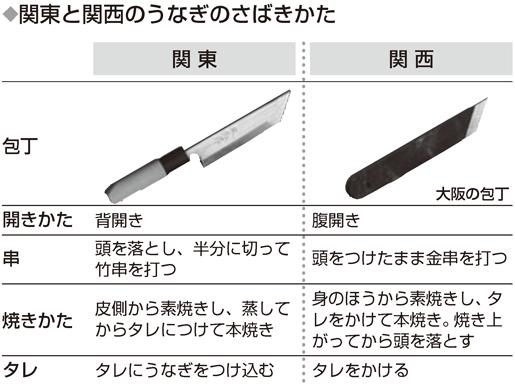

| 「おにぎり」と「おむすび」、「パスタ」と「スパゲティ」はどう違う？違いがわかる「食べもの」うんちく事典 (PHP文庫) | |
| 日本博学倶楽部 | |
| PHP研究所 (2009) | |
「おにぎり」と「おむすび」、「パスタ」と「スパゲティ」はどう違う？
違いがわかる「食べもの」うんちく事典
日本博学倶楽部
はじめに
日本の食文化はじつに豊かだ。日本のレストランは、世界的に見て料理もサービスも高い水準らしい。『ミシュランガイド東京』では、三つ星評価のレストランが多数選出されている。いや、レストランばかりでない。近頃はコンビニやファーストフード店でも、おいしいのはもちろん、バラエティに富んだ商品が目にとまる。その豊富な品揃えゆえ、私たちは「食」について詳しく知っているような気持ちになるが、じつは知らないことがとても多い。
たとえば、レストランで食べるアサリのスパゲティは、メニューに「パスタ」と書かれるケースが多い。しかし、社員食堂あたりではたいてい「スパゲティ」と書いてあるせいか、「気取ったお店ではパスタ、庶民的なところはスパゲティと呼ぶ」などという人がいる。さすがにそれはないだろう、と思うかもしれないが、では、「パスタとスパゲティの違いは？」という質問に答えられるだろうか。
身近な食べもので、異なる呼びかたがあると知っていても、どこが違うかと聞かれると困ってしまうものだ。
また、違いがあるとは知らずに食べているものもある。たとえば、コンビニのおでん。これはコンビニの冬の人気商品である。コンビニの商品は、全国どこでも同じ物だと思ってはいないだろうか。じつは、コンビニのおでんは、関東と関西で味が微妙に異なる。では、どんなふうに違うのか。詳しいことは本文にゆずるが、そこにはこだわりを感じさせる工夫があったのだ。
今や世界中から食べものが集まる日本。食の世界を知ろうとすればするほど、その奥の深さに気づく。
本書では、親しみのある食材や料理を中心に、そんな食べものの違いを紹介する。「へぇ～」と思わずうなってしまったうんちくを、同僚とわいわいランチを楽しんでいるとき、デートでちょっとカッコをつけたいとき、ぜひ披露していただきたい。会話がさらに弾むこと請け合いである。
日本博学倶楽部
違いがわかる「食べもの」うんちく事典 目次
装丁――中山銀士＋金子暁仁
装丁立体イラストレーション――野崎一人
▼▼おにぎり と おむすび
同じものでも成り立ちが違う なんと一方は神様の名前から
「おにぎり」と「おむすび」。あなたはどちらを使っているだろうか。
どちらでも同じと思うかもしれないが、成り立ちがまったく違う。一方は動作を表わした言葉で、もう一方はなんと神様の名前が起源だという。
動作から名づけられたのはおにぎり。「ご飯を握る」に由来し、その歴史は古く『常陸国風土記』に「握飯」の語句が見える。飯のことを「いひ」と呼び、それを握ったものなので「にぎりいい」と呼んだ。江戸時代には「にぎりめし」と呼ぶようになり、今に至っている。
一方おむすびは、『古事記』に登場する農業の神、神産巣日神を語源とする。「ムスヒ」には、古代神道で〝産む〟という意味と、米粒には神が宿っていて、米を結ぶことで霊力を取り込むという意味がある。ここからおむすびという名が生まれる。おむすびは神様の名前だったのである。
現在では地域によって呼びかたが分かれ、おむすびは東日本で多く使われ、おにぎりは西日本で多く使われる傾向にある。あなたの地域ではどうだろう。
▼▼タラコ と 明太子
じつは両方同じ意味！ 辛いほうはどっちだ？
タラコとは北洋の海で漁獲されるスケトウダラの子という意味だ。タラの子である卵を塩漬けにしたものが、市販されているタラコである。生のときは淡いベージュ色をしている。市販のタラコが赤いのは、食用色素で着色しているのだ。
明太子も同じくスケトウダラの子。もともとは朝鮮半島でのタラの呼び名「明太（ミョンテ）」の子の意味だった。
韓国ではタラを干物にしたり塩辛にして食べていた。地理的に韓国に近い九州でこの食習慣を真似て生まれたのが、「辛子明太子」である。
塩漬けのタラコを、さらに唐辛子、酒、みりん、昆布ダシなどを混ぜた調味液に漬け込んでつくる明太子は、日本人の味覚にあうよう工夫されている。はじめは地元だけで食べられていたが、商品化されると旅行者などを通じて評判になり、しだいに東上していった。その過程で「辛子」が抜けて明太子が通称になり、タラコがただの塩漬け、明太子は唐辛子漬けと使い分けられているのが現状だ。そのため、西日本では今でもタラコを明太子と呼ぶことがある。
▼▼東京のコンビニのおでん と 大阪のコンビニのおでん
全国共通の味じゃない!? コンビニのおでんはダシが決め手
おでんはコンビニ定番の人気商品だ。コンビニでおでんのダシの匂いを嗅ぐと、つい手が伸びてしまう人も少なくないだろう。しかし、そのダシの匂いは、東京と大阪では微妙に違うのだ。
全国展開しているコンビニは、いつでもどこでも同じ品物を買えるお店として旅先でも安心して利用できる。だが、コンビニなら日本全国どこでも同じ商品を置いていると思ったら大間違い。その代表例が、おでんだ。おでんは元来、地域の特徴が強い。そのため、その地域の人の口にあうように全国をいくつかに分け、素材や味を変えているのである。コンビニのおでんへのこだわりは奥が深い。その細かい違いをセブン－イレブンを例にとって紹介してみよう。
セブン－イレブンのおでんは、東京でも大阪でも人気商品だ。ダシは東京、大阪ともにカツオと昆布を使っている。ダシは共通なのかと思ってしまうが、じつはこの昆布の種類を東西で変えている。関東では利尻昆布、関西では真昆布でダシをとる。その地域でなれ親しまれている味をつけるという方針のもと、味の基本であるダシにこだわったのである。
セブン－イレブンの場合、単に関東と関西に分けるだけでなく、全国を七つに区分して、それぞれの地区でブレンドするダシの組み合わせを変えている。その地区の伝統的な味わいに近づけているのである。
おでんダネも関東と関西では違う。関東ではかまくらはんぺん、関西では湯葉を加えている。ほかの地方でもいろいろな工夫が見られる。北関東では生芋コンニャク、東北では玉コンニャク、北海道では笹たけのこ、中国地方ではじゃこ天など、地方限定の具がそれぞれに用意されているのだ。
薬味は全国共通でからしが用意されているが、それに加えて首都圏では味噌、関西以西ではゆず胡椒が用意されているなど、地域の要望を見事に取り入れている。
こうした地域別の違いはおでんだけではない。そばつゆも地域ごとに好まれる味にあわせているし、弁当の中身も違う。たとえば幕の内弁当の場合、東京ではシャケが入っているが、九州ではサバが入っている。
全国どこへ行っても同じように存在しているコンビニだが、中身はご当地の味。地方に旅行したときは、ぜひ食べ比べてみたいものだ。ただし、肉まんやあんまんは全国共通なのであしからず。
▼▼東日本の日清のどん兵衛 と 西日本の日清のどん兵衛
東西の味の違いを再現！ カップうどんのこだわり
日清食品の大ヒット商品・カップうどん「日清のどん兵衛」。日本全国どこに行っても買うことができるが、じつは東日本と西日本ではつゆの味が違うし、きつねうどんはおあげの味も違う。
うどんのつゆが関東と関西で大きく違うのは有名な話だが、「日清のどん兵衛」は、その東西の違いをカップうどんで実現した最初の商品なのである。
「日清のどん兵衛」が発売されたのは一九七六年。発売当初から東日本のつゆはカツオダシの割合を高くして濃口しょうゆのスープで、西日本のつゆは昆布ダシの割合を高くして淡口しょうゆで仕上げたもの。そのため味だけでなく見た目も違う。
東西の境界線は、「日清のどん兵衛」開発担当者が東海道新幹線「こだま」に乗って各駅で下車し、うどんの試食を繰り返して決定した。東京駅から西へと進んだ担当者は関ヶ原を越えたところでつゆの味が変化したことに気づき、東西の味の境界線を関ヶ原としたのである。商品パッケージの原材料の囲み枠下に（Ｅ）とあれば東日本向け、（Ｗ）とあれば西日本向けだ。
▼▼シーチキン と ツナ缶
どっちも同じマグロの身 ふたつの名が混在するワケ
シーチキンサンドとツナサンドは、どちらも同じ魚肉を挟んだサンドイッチのように思えるが、なぜか名前が違う。どちらの具も、マグロやカツオを蒸し煮にし、それを調味料や油とともに缶詰にしたものが材料だ。名前は違っても、結局同じものではないのか？
そう、このサンドイッチの具は、同じマグロ類の缶詰なのである。名前が違う理由は、「シーチキン」という名前ははごろもフーズが商標登録した商品名だから。ほかの会社がシーチキンという名前を使うには、はごろもフーズに使用の許諾を得なければならないのである。
はごろもフーズがシーチキンを発売したのは、今から五十年以上も前の一九五七年のこと。翌五八年に商標登録されるが、シーチキンはすぐに大人気を博し、その名を日本中、いや世界中に広めることになったのだ。
今やツナ缶といえばシーチキンというほど定着し、一般呼称のように思われがちだが、じつは特定の商品を示す名称なのである。
▼▼ピラフ と チャーハン
炒めてから炊く洋食！ 炊いてから炒める中華！
ピラフもチャーハンも、お米を炊いたり炒めたりしてつくる料理である。使うお米は、どちらも粘りが少ないインディカ米が向いている。
中近東から東地中海にかけての地域で発祥し、そこからヨーロッパに伝わったのがピラフ。一方、中国の点心料理からはじまったのがチャーハンだ。最大の違いはつくりかたが異なること。どちらも炒める、炊くという手順が含まれるが、その順番が逆なのである。
ピラフは、玉ネギをバターで炒め、そこに米を加えて一緒に炒めた後、ブイヨンなどのスープストックで炊き上げる。玉ネギ以外の野菜や肉が加えられることもある。スペインのパエリアやイタリアのリゾットの調理手順は、ピラフに近い。
ピラフが「炒める→炊く」という手順を踏むのに対し、チャーハンは「炊く→炒める」という順番である。炊いたご飯を冷まし、具と一緒に強火でさっと炒める料理だ。炒めるのに使う油はラードが適している。
つまり、お米を炒めるのがピラフ、ご飯を炒めるのがチャーハンなのである。
▼▼きつね と たぬき
きつねとたぬきの化かし合い そばとうどんで呼び名が変わる？
そばやうどんのトッピングで代表的なものといえば油揚げ。たいていは甘辛く煮た油揚げがのせられる。この油揚げのタネを「きつね」と呼ぶのは、稲荷神社のお使いとされるキツネの好物だといわれているからだ。
東京では、この油揚げののったうどん・そばである「きつね」に対して、油揚げの代わりに揚げ玉（天かす）をタネとした「たぬき」が生まれた。命名の由来は、タヌキに化かされ、油揚げかと思いきや天かすだけだったせいだとか、「天かす以外のタネ抜き」がなまってタヌキになったのが語源だとかいわれている。
ところが大阪に行くと、「きつね」と呼ぶのはうどんのときだけで、そばに油揚げがのったものは「たぬき」と呼ぶ。メニューに「きつねうどん」はあっても、「きつねそば」はないということだ。また油揚げをのせたそばを、大阪府下の信太の森に伝わるキツネ伝説から「しのだ」と呼ぶこともある。
さらに、京都のたぬきは油揚げをのせてトロミのあんをかけたものだ。ホントにたぬきは地方ごとに化けているようである。
▼▼東京の天ぷら と 大阪の天ぷら
注文するときは要注意！ 同じ名前でも別の食べもの
天ぷらは江戸時代に江戸市中で生まれた料理である。一七四八（寛延元）年に刊行された『料理歌仙の組糸』には、魚や野菜に水で溶いた小麦粉の衣をつけて揚げるという表記があり、すでに現代の天ぷらと同じような調理法だったことがわかる。
また、大坂にも天ぷらと呼ばれる料理があった。しかし、それは魚のすり身を椀の蓋などで腰高まんじゅうの形にこしらえて素揚げにしたもので、江戸の天ぷらとは似ても似つかない姿。つまり、現代でいうところのさつま揚げと同様のものが、大坂では天ぷらだったのである。
ところが明治時代になると、天ぷらは江戸流の衣揚げを指す言葉として確立され、現代では天ぷらといえば衣揚げと全国的に認識されている。海外でも人気の和食としての天ぷらも、江戸流の衣揚げのことだ。
これは、明治以降に各地の方言が標準語に収斂していったため。近代国語辞典の多くも江戸流の衣揚げを天ぷらとして採用している。
大阪の天ぷらという言葉はすっかり割を食ってしまい、大阪だけの名称として今に残ることとなった。
大阪では今もさつま揚げを天ぷらと呼び、江戸流の衣揚げも天ぷらと呼ぶ。まったく調理法の異なるふたつの天ぷらが共存しているのである。
その大阪で天ぷらと呼ばれるさつま揚げは鹿児島生まれの食べもので、本場鹿児島では「つけ揚げ」という。今や全国区となっているさつま揚げという名前も、もともとは江戸での呼びかた。江戸時代に「薩摩のつけ揚げ」と呼んでいたものが、いつの間にか詰まって「さつま揚げ」と呼ばれるようになり、この名前が全国に広まったのである。
さつま揚げは、島津斉彬がかまぼこや紀州はんぺんなどにヒントを得て創作したという説と、琉球料理のチキアーギが原型という説がある。薩摩は琉球王国と古くから貿易を行なっており、その関係は鎖国体制の下でも続いていた。チキアーギとは、「魚のすり身を油で揚げた料理」という意味なので、琉球料理が元祖という説が有力なようである。
所変われば名前も変わる。大阪で天ぷらを注文しても、必ずしも東京でいうところの天ぷらとは限らないのでご注意を。
▼▼雑炊 と リゾット
和食か洋食か以上の違いが！ つくりかたから異なる米料理
スープの旨みを吸った米を味わう料理の代表として、和風なら雑炊があげられる。
とくに、鍋料理の後にご飯を加えて卵でとじる食べかたは定番中の定番だ。鍋に使った肉や魚、野菜から出たダシを吸った米は、滋味にあふれている。また、鍋料理をしなくても、魚介や鶏肉、野菜などを入れた汁物をつくり、そのなかにご飯を入れてさっと煮たてたものも雑炊と呼ぶ。一度炊いたご飯を汁に入れて煮たものが雑炊ということだ。
イタリア料理のリゾットも、同じようにスープと米を味わう料理だ。「イタリア風雑炊」とでも呼びたいところだが、このふたつの違いは、スープが洋風というだけではない。リゾットは、炊いたご飯ではなく生の米から煮るのである。
米をバターやオリーブオイルで炒め、好みのブイヨンを注ぐ。魚介や野菜を加えて煮るのは日本の雑炊と同じだ。ただし、米は歯ごたえがあるように芯を残したアルデンテに仕上げる。もっともシンプルで代表的なリゾットは、粉チーズを振り入れただけのチーズリゾットだ。
▼▼パスタ と スパゲティ
どっちが正解？ その答えは太さにあり！
ランチをパスタにしようとお店に入る。するとパスタメニューには「ミートソーススパゲティ」やら「チキンとレンズ豆のスパゲティ」やら......。なぜこれを「スパゲティメニュー」ではなく「パスタメニュー」と呼ぶのだろう。
これを解き明かすには、本場イタリアのパスタの概念を理解する必要がある。イタリアでは、広義には小麦粉など穀類の粉を練った生地一般のことをパスタといい、狭義ではスパゲティ、マカロニ、ニョッキなどをつくるために練った小麦粉と、その小麦粉からつくった麺などの総称になる。
日本では三〇種ほどのパスタが市販されている。これらは、ＪＡＳによって製品規格が定められている。それによれば、棒状パスタのうち一・二～二・五ミリの太さがスパゲティ、一・二ミリ未満がバーミセリー、二・五ミリ以上の管状やほかの形をしたものがマカロニというのがおもなところだ。
スパゲティはパスタのなかの一種類でしかない。つまり、パスタメニューにはニョッキやマカロニを使った料理が書かれる可能性もあるということだ。
▼▼そうめん と ひやむぎ
眺めるだけではわからない 白くて細い麺の微妙な違い
夏バテで食欲がないとき、ひんやり氷を浮かべた器からつまみ上げて、つゆをつけてツルッと流し込む麺。ネギや青じそ、しょうがなどの薬味が食欲をかき立ててくれ、力が湧いてくる。それが「そうめん」だ。乾麺なので保存もきき、お中元の定番にもなっている。
同じように細くて白い麺で、食べかたも同じなのに「ひやむぎ」と呼ばれる乾麺がある。スーパーの棚に仲よく並んでいるが、どこが違うのか見分けがつかない。というのも、わずか十分の一ミリ単位でふたつの麺が区分されているからだ。
十分の一ミリ単位で測られているのは麺の太さで、ＪＡＳでは一・三ミリ未満をそうめん、一・三～一・七ミリをひやむぎとしている。
製麺業界ではこの規格が定められる前、一寸（約三・三センチ）の幅のなかに麺が何本並ぶかで、そうめんとひやむぎを区別していた。ひやむぎだと一八～二二本、そうめんは二四本以上並ぶ。
現在の乾麺は大半が機械製造だが、かつてはすべて手作業だった。その伝統を引き継いでいるのが手延べ干し麺である。この手延べのそうめんにももちろんＪＡＳの基準は適用される。今も手作業でその細さをつくり出しているのだから、驚異的な職人の技だ。
そうめんは、小麦粉を塩水で練ってからひも状にし、表面に油を塗ってひと晩寝かせる。ひも状にするとき、縒りをかけることで麺にコシが生まれる。それを上下に渡した棒にかけ、さらに細く糸のように延ばしていくのである。冬場、乾燥する地域は麺を干すのに都合がよかったため、冬季の農家の副業とされてきた。その技が、現代にまで伝えられている。
ひやむぎはうどんの製法と同じで、薄く打ち伸ばした生地を細く切る。うどんより細く切るため、「切り麦」と呼ばれて室町時代頃から食べられていた。当時は冷やしたひやむぎのほか、温めて食べたり、蒸して食べたりもした。それらの食べかたはやがて廃れ、冷たいつゆで食べるひやむぎだけが現在に残った。
そうめんもひやむぎも、保存の利く乾麺だ。乾麺は、いつでも好きなときに好きな量をゆでて食べられる。しかもそうめんもひやむぎもゆで時間が比較的短い。シンプルな食材なので、薬味に凝ったり、つゆを工夫してみたり、自分好みの味を追求するのも楽しいものだ。
▼▼ウィンナー と ソーセージ
本場ドイツでは通じない？ お弁当定番食材の事情
ウィンナーといえば、子どものお弁当のおかずの定番で、タコさんと名づけられた飾り切りまで誕生しているポピュラーな食材だ。
日本では、ウィンナーをソーセージと呼ぶことがあるが、ソーセージの語源は塩漬け細切れ肉のことで、腸詰めの意味はなかった。調味されたひき肉そのものがソーセージなのだ。そして日本でいうウィンナーとは、ドイツでは一五〇〇種以上もあるというソーセージのなかのひとつにすぎないのである。
ただ、ＪＡＳ規格では別で、詰められている肉の種類などとは関係なく、ウィンナーソーセージと名づけていい商品の基準を設けている。一定の基準で製造されたソーセージのうち、羊の腸かそれに準ずる太さ（二〇ミリ未満）のケーシング（ソーセージを詰めるための腸など）が使われている商品というのが、その基準だ。
さらに、豚の腸かそれに準ずる二〇～三六ミリのケーシングならフランクフルト、牛の腸かそれに準ずる三六ミリ以上ならボロニアと、ほかのソーセージに関する分類の基準もあるが、この基準と呼びかたはあくまで日本における規格である。
▼▼佃煮 と 甘露煮
片方はあま～く煮たもの？ 江戸に伝わる保存食
佃煮は、江戸時代初期に江戸城へ納める魚を獲っていた佃島に住む漁師が考案した。城へ納めて残った小魚をしょうゆで煮詰めた保存食である。江戸時代に、江戸詰めの大名が国元への土産としたため、全国へ広がったのだ。
今ではさまざまな魚介類、野菜やきのこ類、海藻類など、種類も豊富になっている。このうち、ワカサギやフナ、アユなどを材料としたものを甘露煮と呼ぶことがある。
これは原材料の違いによって、佃煮、甘露煮と区別して呼んでいるわけではない。甘露煮も佃煮の一種だが、調味料の割合で呼び分けているのだ。
大阪府調理食品協同組合によれば、佃煮はしょうゆをベースにして、酒、砂糖、水飴などで煮詰められるが、このうち水飴の分量を増やしたものが甘露煮である。水飴はテリを出すために入れるものなので、一般の佃煮より艶がいいのも甘露煮の特徴だ。最近では糖分を控える風潮からか、「甘い」という字が敬遠されるため、飴煮、うま煮といった商品名になっていることも多いそうだ。
▼▼地鶏 と 銘柄鶏
ふたつあわせて国産銘柄鶏 その区分はどうなっている？
価格が高いにもかかわらず、ジワジワと人気が高まりつつある地鶏と銘柄鶏。一般の鶏肉とどう違うのか、さらに地鶏と銘柄鶏の違いはどこにあるのか。
食用の鶏にはブロイラーと国産銘柄鶏の二種類がある。ブロイラーとは肉用鶏で孵化後三カ月未満の鶏のことだ。孵化日から五十五～六十日程度で出荷され、全国に流通している食用鶏のほとんどがブロイラーで、飼育方法などに特別の基準はない。
それに対し、国産銘柄鶏は、通常の鶏とは種鶏や飼料、飼育方法、出荷日齢などが異なる方法で日本国内で飼育、処理加工されたもの。この国産銘柄鶏と呼ばれるものが、その性質によって地鶏と銘柄鶏の二種類に分類されているのである。
地鶏と銘柄鶏の定義は日本食鳥協会の「鶏肉表示のガイドライン」に表示されており、両者のもっとも大きな違いはその出自にある。地鶏とは、在来種純系か在来種を両親か片親に使ったもので、在来種由来の血筋が五〇％以上のものをいう。在来種とは、明治時代までに国内で成立、または導入されて定着した鶏の品種のことである。さらに飼育方法にも決まりがあり、孵化日から八十日以上飼育され、二十八日齢以降は平飼い（鶏舎内か屋外で、鶏が床面か地面を自由に運動できる状態で飼育）、なおかつ一平方メートル当たり一〇羽以下で飼育しなければならない。この条件をすべてクリアして初めて地鶏と認定されるのだ。

銘柄鶏のひなは、褐色系の赤鶏かブロイラーであることが基本。飼料内容や出荷日齢といった飼育方法が通常とは異なる工夫を加えた内容であることが必要で、その内容を出荷段階のパッケージ等に明記しなければならない。銘柄鶏は出自にはこだわらないが、飼育方法に特別な工夫を加えた鶏というわけである。
▼▼温泉卵 と ゆで卵
温泉でつくったら温泉卵？ 家でつくったらゆで卵？
温泉卵はトロンととろけるような白身の口あたりと、熱が通って味の濃くなった固まりきらないやわらかい黄身が卵の味を引き立たせる。ゆで卵同様に、家でも意外と簡単にできる卵料理であるが、ゆで卵とはつくりかたが違うので要注意だ。
温泉卵と半熟のゆで卵との違いは、温泉卵は固まりはじめのゆるい白身と比べて黄身が固いのに対し、半熟卵は黄身がやわらかくて白身は固まっている点である。温泉卵と半熟卵では、黄身と白身の状態が逆転しているのである。
この違いは、卵は加熱したとき、黄身のほうが白身より低い温度で固まるという性質から生じている。ポイントはその温度だ。白身は七〇度以上にならないと固まらないが、黄身は六五度から七〇度でほぼ固まる。だから温泉卵をつくるには、六五度以上から七〇度未満のお湯に約三十分卵を入れておく。すると、自然にあのトロンとした卵ができるのだ。
一方、ゆで卵は水から入れて湯を沸騰させる。半熟にしたいなら、沸騰後三～五分、固ゆでにしたいなら十分程度ゆでると、白身が固い卵ができあがるのである。
▼▼ピーマン と パプリカ
辛くないトウガラシの結構あやふやな境界線
ピーマンとパプリカは、どちらもトウガラシの一種。一般的には、果皮の色がピーマンは緑でパプリカは赤や黄とカラフルな点、大きさがピーマンよりパプリカのほうが大きい点などで見分ける。また、食べるとピーマンには苦みが、パプリカには甘みがあるといった違いがある。
ただし、この「違い」は、かならずしもすべてにあてはまるわけではない。たとえば、ピーマンもパプリカも、はじめは緑だったものが完熟して赤になる。また、大きいピーマンや小さいパプリカもあるし、赤ピーマンはパプリカのように甘い。
じつはピーマンとパプリカの決定的な違いは、果肉の厚さと形にある。果肉の厚いものがパプリカ、薄いものがピーマンだ。そして、形がリンゴに近いのがパプリカで、細いのがピーマンである。
ピーマンに比べて日本でパプリカのなじみが薄いのは、パプリカの輸入が解禁されてから二十年ほどしか経っていないことや、気候の問題で国内生産量が極めて少ないから。現在でもその多くを輸入に頼っている。
▼▼インドカレー と 日本のカレー
サラサラからトロトロへ 日本の国民食誕生のヒミツ
カレーといえばインドのイメージが強い。しかし、本場のインドカレーはサラサラしたスープ状なのに、日本のカレーはとろみタップリ。インドで生まれたカレーが、どうして別の食べもののようになってしまったのか？
インドカレーと日本のカレーが大きく異なるのは、カレーがヨーロッパを経て日本に入ってきたからだ。カレーは十八世紀にイギリスやフランスに伝わり、そこで、インド式カレーを自分たちが得意とするルウを使ってつくるようになり、普及した。つまり、小麦粉をバターやオリーブオイルで炒め、そこに独自に開発したカレー粉を加えてカレールウをつくり出し、より料理しやすく、食べやすいように変化させたのである。
この西洋式のカレーが幕末から明治にかけてイギリス人によって日本に伝えられたため、日本のカレーも小麦粉を使ったとろみのあるルウタイプが主流になったわけである。インドカレーにもとろみのあるカレーはあるが、それはオクラやジャガイモなどの具材から出た「結果的」なとろみで、小麦粉を使ったカレーはない。
▼▼高野豆腐 と 凍み豆腐
歴史ある日本の伝統食 お寺発祥か？ 戦国武将の兵糧か？
煮物や精進料理などに使われる凍り豆腐は、関西地方では「高野豆腐」、長野や東北地方では「凍み豆腐」と呼ばれるのが一般的だ。現在ではふたつの凍り豆腐の製法や味に大きな違いはない。ただし、その由来は大きく異なっている。
「高野豆腐」は鎌倉時代、高野山の修行僧があやまって豆腐を凍らせてしまったのがはじまりだとされる。江戸時代初期には「氷豆腐」と呼ばれていたが、その後、由来の高野山の僧にちなんで「高野豆腐」と称されるようになった。
「凍み豆腐」は、長野や東北などで冬場の食材として広まり、武田信玄も兵糧にしたと伝えられる。その名前は凍りそうな寒さを意味する方言「凍みる」からつけられ、江戸時代には商品化されていた。
ふたつの凍り豆腐は、製法もそれぞれだった。「高野豆腐」は一晩凍らせた豆腐を冷暗所に置き、お湯をかけて溶かした後、絞って乾燥させたもの。一方、「凍み豆腐」は冬場戸外につるし、凍結と乾燥を繰り返してつくっていたものである。現在では「高野豆腐」のつくりかたを発展させた製法が主流になっている。
▼▼シラス と じゃこ
ご飯がすすむ飯の友 違いはサイズか乾燥ぐあいか？
魚屋さんやスーパーでよく目にするシラス。そのまましょうゆをかけるだけで、ご飯にピッタリのおかずになる。
しかし、同様の魚がじゃこ、もしくはちりめんじゃこと表示されている場合がある。その違いはどこにあるのだろう？
基本的に、シラスもじゃこも、同じカタクチイワシなどの稚魚を塩水でゆでて干したものという意味では変わりはない。その両者を分けるのは乾燥の度合いで、一般的にはシラスは微乾燥品で水分約七〇％、じゃこは半乾燥品で水分約四〇％のものを指すといわれている。つまり、軽く乾かしたものがシラス、ある程度水分が抜けるまでしっかり干したものがじゃこというわけだ。
しかし、この分類法が全国で一律に通じるかというと、そうでないところがややこしい。じつはシラスやじゃこという名前の定義が、地方によってかなり違っているのだ。
たとえば関東では半乾きのものをシラスというが、関西では同じものをじゃこやおじゃこ、ちりめんじゃこなどと呼び、シラスとは呼ばない。
流通が全国的に行なわれる現代では、地方の呼びかたがそのまま商品名として首都圏をはじめとする大都市圏に入ってくることから、乾燥度による定義はいつしか曖昧となり、今ではシラスもじゃこも同じ意味を指す言葉として使われることが多くなった。
じゃこやシラスを加工している現場では、業者間で共通の目安を設けているのかというと、それもとくにない。たとえば和歌山のある生産者は、釜でゆでたものは「釜揚げシラス」、干したら「ちりめんじゃこ」という商品名で扱っている。
では加工前には、釜揚げ用と天日干し用とで呼び分けるのかというと、どちらに加工するイワシの稚魚も「シラス」である。そしてウロコが出はじめ、体が銀色を帯びるくらいまで成長したものを「かえりじゃこ」と呼び、これは釜揚げにはせず干して「天日干しかえりじゃこ」にする。ウロコも出そろって煮干になるくらいにまで成長したら、それはイワシだ。
こうした呼び分けも業者によって違うのだそうだ。お客さんはさらに自由で、注文が入るときは「釜揚げのおじゃこありますか？」「天日干しのシラスください」と、商品名すらおかまいなしらしい。
▼▼ブロッコリー と カリフラワー
こんなに色も味も違うのにもともとは同じ植物だった!?
白いカリフラワーと緑のブロッコリーは、球状の形がよく似ていて、サラダやシチュー、炒め物にも大活躍する。いずれも野菜には珍しく、ガクや花弁がはっきりと分かれていないつぼみの部分を食用にしている。ブロッコリーを放置すると、小さな黄色い花が目立ってきてちょうど菜の花のようになるので、ブロッコリーのツブツブがつぼみ（花蕾）なのだとわかるはずだ。
ブロッコリーもカリフラワーもアブラナ科の植物で、キャベツの仲間。紀元前二〇〇〇年頃から地中海沿岸地方でキャベツの花蕾を食べていたようで、これがブロッコリーの起源だ。カリフラワーは、このブロッコリーが突然変異で白色化した、いわゆるアルビノを栽培種に品種改良したものである。
日本ではカリフラワーのほうが先に広まったが、じつはブロッコリーのほうが先輩だったのだ。『たべもの植物記』（能戸忠夫著、山と溪谷社）によると、カリフラワーのやわらかさ、癖のなさが日本人の口にあった。その後、緑黄色野菜が人気となったのでブロッコリーも人気が出たのだそうだ。
▼▼玄米 と 発芽玄米
普通のお米じゃ物足りない！ 健康にいいお米を比較検証
玄米や発芽玄米は体に良いことで知られている。同じ玄米なのに何が違うのだろう。
玄米はもみがらを剥いた米であり、発芽玄米はこの玄米を三日程度水に浸し、一ミリ弱発芽させたものである。玄米は硬い、炊きにくい、糠くさいなどとしばしば敬遠されるが、発芽させた玄米はそれらが解消され、食べやすくなる。
玄米の食べにくさの原因は、米を覆っている種皮や果皮などの「糠層」にある。発芽によりこの糠層がやわらかくなり、ふっくらと炊き上がるうえに、甘み、旨みともに豊富な白米と変わらないおいしいご飯になるのだ。
さらに、発芽に必要な栄養素がお米のなかに増えるため、栄養価は普通の玄米の数倍となる。なかでもストレス軽減作用があるとされる栄養素の「ギャバ」は白米の一〇倍、玄米の二～三倍に増えるという。発芽玄米は玄米に比べて味がよく栄養価も高いお米なのだ。発芽玄米はゴシゴシ研がず、すすぐ程度にとどめておくのがおいしく炊くコツである。
▼▼キャベツ と 芽キャベツ
違いは収穫のタイミング？ 芽キャベツがキャベツになる!?
キャベツには普通のキャベツのほか、芽キャベツと呼ばれる直径二～三センチのピンポン玉くらいの小さなものがある。
芽キャベツという名前から、キャベツが成長する前の芽だと思っていないだろうか。芽キャベツは、キャベツが大きくなる前に収穫したものではなく、れっきとした一品種である。キャベツが紀元前七世紀頃には栽培されていたのに対し、芽キャベツは十六世紀頃から栽培されるようになった。
芽キャベツは、キャベツと同じアブラナ科に属するが別品種で、畑で栽培されている様子も普通のものとはかなり違う。
普通のキャベツは土の上で葉を巻いて楕円形、または球形ができあがっていく。ところが、芽キャベツは葉の付け根に、超ミニサイズのキャベツ状に結球した芽が鈴なりにびっしり実るのだ。そのため、子持ちキャベツとも呼ばれている。

見た目だけでなく、味もそれぞれに特徴があり、使われかたも違う。
普通のキャベツは甘みがあり、生で千切りにされるほか、お好み焼きの具材、ロールキャベツなど、家庭料理を中心に幅広く用いられている。肉や揚げ物に千切りしたキャベツを添えるのは日本特有の習慣で、欧米ではスープの具として使われたりする。
これに対して芽キャベツにはやや苦みと香りがあるため、先にゆでてから煮物やサラダ、炒め物などに利用されるようだ。一般家庭よりはレストランなどの飲食店で好んで使われる。
栄養価は芽キャベツのほうが高い。ビタミンＣはキャベツの三倍、タンパク質やミネラル、食物繊維なども豊富だ。
小さいながらもキャベツとは違った独特の香りや味があり、栄養もたっぷりの野菜なのである。
▼▼ハム と ベーコン
人気の豚肉の燻製品 見た目や味を分けるのは何？
ハムとベーコンは見た目も味も色合いも異なるが、どちらも豚肉を塩漬け・燻煙した加工品だ。
ＪＡＳでは、豚ばら肉を塩漬け、燻煙したものをとくにベーコンと定義し、それ以外はロースベーコン、ショルダーベーコンなど、それぞれ部位の名前をつけて呼ぶ。ハムは部位や製造法によって、ボンレスハムやロースハムと呼称する。そして、ハムとベーコンの大きな違いは、最後の仕上げにある。
ハムは燻煙後に保存性を高めるために湯や蒸気で加熱するが、ベーコンは燻煙後に加熱しない。この最後の加熱の有無が両者の大きな違いだと、伊藤ハムの広報部では説明する。そのため、ベーコンはハムより赤みが強く、香ばしさが残るのが特徴だ。ベーコンは燻煙の際に高い温度で処理することが多いという。
しかし、欧米では日本とは少し定義が違っていて、ハムは豚もも肉を指し、ベーコンと同様に加熱しない製品もハムと呼ぶ。このように肉類の加工品では、欧米から取り入れた文化が日本で独自の展開を見せることが多いのである。
▼▼マーガリン と ファットスプレッド
よりカロリーが低いのは？ ビミョーに違うバターの代用品
トーストにバターを塗れば、焼けたパンの芳ばしい香りとバターの油脂の香りが混ざりあい、じつに食欲をそそる。だが、バターは脂肪分が高い。バターの代わりにマーガリンを塗っている人も多いだろう。
マーガリンは、バターの代用品として十九世紀にフランスで発明された。その原料は九〇％以上が植物油であり、動物性油脂が主成分のバターと区別されている。
パンに塗るものとしては、ほかにもマーガリンによく似た「ファットスプレッド」というものがあることをご存じだろうか。「バターの代わりに」と思ってスーパーで買ってきたマーガリンは、もしかしたら「ファットスプレッド」である可能性もあるのだ。
ファットスプレッドは、「マーガリン類」ながら成分中の油分が八〇％未満とマーガリンより少なく、カロリーも低い。その分水分が多くてパンに塗りやすいという特徴がある。パッケージに「ファットスプレッド」と表示されているので、味の違いを確認してみてほしい。
「新鮮な卵」と「古い卵」
おいしい卵を選び抜くにはこの方法
卵の鮮度を見極めるには、いくつかの方法がある。
一般に、「殻がザラザラなら新しく、ツルツルは古い」といわれるが、これはあてにならない。卵は古くなると殻と皮の空間である気室が大きくなるので、専門機関では光に透かして確認している。家庭でも光に透かし、透き通っていれば新鮮な卵、黒ずんでいれば古くなった卵と大まかには判定できるが、本来は強い光源が必要なので、正確さに問題が残る。
より正確に見分けるには、一〇パーセント程度の食塩水に沈める方法が確実だ。新鮮な卵は比重が大きいので底に横になって転がり、少し日がたった卵は底で立つ。そして、古い卵は浮くのだ。ただし、水に濡らした卵は腐りやすくなるので、食塩水につけたらすぐに使うこと。
卵を割って鮮度を見極めるのなら、白身と黄身がこんもり盛り上がった卵が新鮮なものである。
▼▼ズワイガニ と タラバガニ
じつはカニじゃない!? その正体はヤドカリだった！
日本人が大好きなカニ。カニの種類は六〇〇〇以上あるといわれているが、日本人が好んで食べるのは毛ガニやズワイガニ。
毛ガニは北海道でおもに漁獲され、その名のとおり全身が短い毛で覆われている。身は淡白すぎず濃すぎず飽きのこない味で、ミソもおいしく、甲羅がやわらかいので食べやすいという利点もある。
ズワイガニは脚が長いことが特徴であるクモガニと呼ばれるカニの一種だ。北陸を中心とする日本海で獲れ、甘みが強く身が詰まっている。火を通しても身縮みせずやわらかいので、ゆでて食べるのはもちろん、焼いても美味だし、当然刺身にしてもおいしい。地方によって名前が変わるのが特徴で、関東地方では越前ガニ、山陰地方では松葉ガニという具合に、多くの地方名があるが、どの地方でも大型のオスだけはズワイガニと呼んでいる。
これに対し、最近人気が高まってきたのがタラバガニだ。タラバガニは高級缶詰用として人気を博してきたが、近年はそのまま食べる人が増加中。淡白で繊維の太い身を持っているカニで、ゆでても焼いても、刺身として食べてもおいしい。つまり、新興勢力とはいえズワイガニ級に楽しめるおいしいカニなのだが、じつはタラバガニにはズワイガニや毛ガニとはまったく異なる特徴がある。それは、脚の数。
通常、カニは脚が左右に四本ずつとハサミで、合計一〇本の脚があるのだが、タラバガニをよーく観察してみると、なんと脚は左右に三本ずつ、ハサミと合わせて合計八本しかないのである。
タラバガニはカニと名はついているものの、じつはカニ類ではなく、なんとヤドカリ類なのだ。四番目の脚が甲羅に隠れていて外に出ていない。これこそヤドカリの特徴なのである。
カニという名のヤドカリはほかにも花咲ガニ、アサヒガニなどがあり、どちらも「カニ」として人気がある。
ヤドカリも大型のものは味がいいようだ。島根県に生息するヨコスジヤドカリやアカホシヤドカリなどは、塩ゆでして食べれば美味だといわれる。島根県水産技術センターで聞いたところ、これらのヤドカリは店頭に並ぶことはないが、漁の網にかかった際などは漁業関係者の家の食卓にのぼるのだそうだ。
店頭のカニを見分けるなら、脚の数をみれば簡単に判別できる。
▼▼突き出し と お通し
お店で耳にするふたつの呼び名 違いは中身？ 出しかた？
「いらっしゃいませ」の言葉とともに料理店などで酒の肴として最初に出される「突き出し」または「お通し」。今ではどちらの言葉も耳にしたことがあるという人が多いだろうが、このふたつの違いはその出しかたなのだろうか、それとも内容なのだろうか。
答えはどちらもノーである。
料理の内容や出しかたで区別されるわけではない。ただし語源については「準備済みの小鉢を突き出すように出す」から突き出しであり、「客の注文が通ったしるし」「どの客にも共通して出す料理」という意味で使われはじめたのがお通しだ。
このふたつの言葉は地域によって使い分けられている。関西では突き出し、関東ではお通しというのが一般的だ。
全国チェーンの大手居酒屋では「お通し」ということが多いが、ある大手チェーンでは関西地区へ進出した後、何年かはメニューの「お通し」について来店客からしばしば質問され、そのたびに「突き出しのことです」と説明していたそうだ。
▼▼懐石料理 と 会席料理
日本料理の真髄！ 漢字で異なる料理の意味
懐石料理と会席料理はどちらも日本料理の粋というべき料理だ。
懐石料理は、茶の湯の席で出される小腹を満たす程度の料理である。安土桃山時代、禅僧の精進料理を参考に千利休が取り入れたもので、修行中の禅僧が空腹に耐えるため温めた石を懐に抱いていたことから命名された。長い茶事のあいだの空腹をしのぐための食事だから、少量で、お酒が出されたとしてもあくまで料理が主役。
会席料理は、江戸時代に入ってから生まれた。連歌や俳諧の集まりの後、皆で楽しむ食事として出される。品数は五、七、九などめでたいとされる奇数で、懐石料理にならって料理は一皿、一鉢ずつ出される。ご飯と汁が最後である。
どちらも四季折々の素材が工夫されていて、選び抜かれた器で見た目も美しく供される。違いとしては、懐石はその後の茶を楽しむための料理、会席は酒をおいしく飲むための料理と考えればいい。席に着く客の数も、懐石は茶席に入る五人程度にすぎないが、会席は一〇人以上に及ぶこともあり、豪華なものとなる。
▼▼つま と けん
刺身に添えられている野菜 呼び分けはあるのか？
刺身につきものの「つま（妻）」。つまは料理を引き立てるだけでなく、消化を助け、魚の生臭さを消す口直しの効果もある。ときには「けん（権）」ともいうが、どう呼び分けているのだろう。
刺身に添える野菜や海藻などを「つま」というのは、その関係を夫婦に見立てた夫（刺身）に対する妻のことに由来するとも、「話のつま」のように主となる食べものに添えるものという意味に由来するともいう。
そのつまにする野菜を細長く千切りにしたものを「けん」と呼ぶのだ。
刺身には、ダイコンを細く切ってしゃきっとさせたけんが添えられているが、これは刺身から出る水分を吸収する役割を果たすもの。もちろんダイコン以外にもにんじん、きゅうりなど生食できる野菜なら何でもけんになる。
ダイコンのけんのことを「千六本」と呼んだりするが、これは中国語でダイコンを意味する「ローボ」と、細く切ることを意味する「セン」から「センローボ」へ、それが「千六本」へと変化したものらしい。
▼▼大麦 と 小麦
実の大きさは変わらない では何が「大」で何が「小」？
ビールの原料・大麦と、パンの原料・小麦は、同じ種を蒔いて、大きく育ったのが大麦、小さい実だから小麦というわけではない。両者は同じイネ科コムギ属に分類されているものの、まったく別の作物であり、性質も違えば、用途も別だ。
大麦は粘りがないのでパンなどの原材料には向かないが、麦飯や麦茶、焼酎、ビールなどの原材料に適している。小麦は粘りが強いので、粉にしてパンやパスタ、菓子などの原材料にすることが多い。麦飯として食べようとしても吸水率がよくないため、パサパサしてしまうのだ。
まったく別の作物なのに、まるで同じ種類のような名前がつけられたのは外見が似ていたから。幼植物のときに大麦のほうが小麦より大柄に見えることから大麦、小柄なほうを小麦と呼んで両者を区別したのがはじまりだ。
科と属が同じで別の植物というものは、ほかにナスとジャガイモがある。こちらは同じナス科ナス属の作物ながら外見が似ていないために別の名前がついたが、大麦と小麦は外見が似ていたため、名前まで似てしまったというわけだ。
▼▼うなぎの背開き と うなぎの腹開き
商人の町と武士の町 江戸の武士がさばきかたを変えた？
土用の丑の日の定番の食べものといえば、うなぎである。なかでも香ばしさが食欲をそそるうなぎの蒲焼は日本人に大人気だ。
そのうなぎの調理法が、関東と関西で異なっているのは有名な話である。
関東ではうなぎは背開きにして竹串にさし、素焼きしたものを蒸した上、本焼きする。関西では腹開きにして背びれ、頭などをつけたまま金串にさし、身のほうから焼き上げるのである。静岡辺りまでは背開きだが、愛知では腹開きでさばかれる。
蒸すか蒸さないかもさることながら、腹を割くか、背を割くかという違いは大きい。この割きかたの違いについては、関東の武家社会と関西の商人社会という東西文化の違いを色濃く反映しているという説もあり、興味深い。
商人の町・大坂では「腹を割って何でも話せるように」ということから腹開きになったというのだ。『東西の食文化』（大石貞男著、農山漁村文化協会）によると、腹開きのほうが料理のスピードが速かったため、腹開きにしたという説もある。
これに対して関東では、江戸の武士が「腹を割くのは切腹につながる」といって、縁起が悪い腹開きを敬遠し、背開きにしたといわれている。どうやら武士のたしなみが、うなぎのさばきかたまで変えたようだ。

さばきかたの違いは、焼いたときの火の通り具合や脂の落ち具合にも影響するといわれる。関東と関西の両方のうなぎを味わい、比べてみるのも面白い。
このさばきかたにあわせて関東と関西では包丁の形も異なる。関東の包丁はにぎり柄があり先がとがっているが、関西（大阪）の包丁は共柄になっているのが特徴だ。
このほか、角のない名古屋型、目打ちをたたくためにハンマーのついた京都型の包丁もある。
▼▼つくね と つみれ
ふたつの団子 違いは鶏肉か魚肉かじゃないの!?
同じ肉団子でも、焼き鳥はつくね、おでんダネならつみれと、呼びかたが違う。これは鶏肉か魚肉かの違いのようだが、そうではない。鶏のつみれもあれば、イワシのつくねもある。要は肉団子のつくりかたの違いなのだ。
つくねは動詞の「捏ねる」が語源で、これは手でこねるという意味だ。ひき肉や魚のすり身を手でよくこね、混ぜる。それを手を使って団子状に丸めたり、木の葉形に整えるとつくねである。焼いたり揚げたり蒸したりして調理するが、汁物の具や鍋物にも使う。
つみれのほうは、「摘み入れる」から転じたもので、ひき肉やすり身をこねてなめらかにするところまでは同じだが、大きな塊を端からつまみ取り、摘み取った団子はそのまま沸騰した煮汁や鍋料理に入れる。だから「摘み入れる」なのだ。
つくねは、こねてしっかり形をつくるために、焼く、揚げる、煮るなどいろいろな料理にアレンジできるが、つみれは、おおむね汁物、鍋料理にしか使われない。
▼▼ラム と マトン
部位の名前じゃない！ あの独特のクセは年齢から
羊の肉は、北海道では家で調理することも珍しくないが、そのほかの地域ではまだ牛肉や豚肉ほど一般的とはいえない。それだけに、ラムとマトンは何が違うのかと聞かれて、即答できる人は少ないだろう。
ラムもマトンも同じ食用羊の肉。違いはというと、一歳未満の子羊の肉がラム、二～七歳の羊の肉がマトンだ。かつて羊肉は匂いがきつくてクセがあるということで日本では好む人が少なく、濃い味のタレで食べるジンギスカンが北海道を中心に食生活に取り入れられていた程度だった。
日本で消費される羊肉の多くはニュージーランドなどからの輸入品で、おもに生後四～六カ月くらいのラム肉だ。生後一年をすぎるまで飼育されてマトンとして出荷される肉の多くは、ハムやソーセージ、冷凍ハンバーグなどに加工される。
たしかにマトンは独特のクセのある匂いがするが、若いラム肉はクセがなく、肉質もやわらかい。ラム肉が流通の中心になると、羊肉に含まれるカルニチンにダイエット効果があるとして、ジンギスカンが人気料理になってきた。
▼▼生食用のカキ と 加熱用のカキ
鮮度の違いを表わしている？ 誤解の多いカキの表示
店頭で売られるカキには生食用と加熱用がある。生食用か加熱用かの違いは新鮮かどうか、身の固さがどうかという単純なものではない。その違いは殺菌してあるかどうかなのだ。
カキはアミノ酸やグリコーゲンが豊富で栄養価が高い分、菌が繁殖しやすい。そのため生食用カキには、食品衛生法により加工基準（採取海域の海水の細菌数の規定や塩水による洗浄義務など）や成分規格、保存基準など細かい規格が設けられているのだ。
一方、加熱用のカキは、水揚げしたカキを殻を外しただけで売ってもよい。塩水洗浄などをしていない分、カキの風味が損なわれていないことになる。ならば加熱用のカキを生で食べたくなるのが人情だ。しかし東京都水産試験場では、「今まで加熱用カキを生で食べて食中毒が発生した事故の報告はないが、注意を喚起しているのに加熱用カキを生で食べて食中毒が起こっても、都は責任を持てない」とのこと。ごもっとも。いくら新鮮であっても、加熱用のカキは生食しないのが無難だ。
▼▼クジラ と イルカ
生物学的には同じ仲間 両者を分けるのは大きさだけ！
かつては日本人のごく一般的な食べものだったクジラ。ＩＷＣ（国際捕鯨委員会）の「商業捕鯨モラトリアム」によって商業捕鯨が全面的に禁止されて以来、食卓にのぼることは非常に少なくなった。しかし、規制されていない種類のクジラは、国による数量規制の下で合法的に捕獲されている。そのため鯨肉は少ないながらも店頭に並んでおり、今でも食べられる。
イルカも水産庁によって捕獲数が制限されており、現在漁が行なわれているのは静岡県の伊東だけだが、その肉も味噌煮などにして供されている。
「え、イルカを食べるの？ かわいそう......」という声が聞こえてきそうだが、クジラとイルカは決して別の種ではない。生物学上はまったく同じ鯨類であり、その違いは大きさだけ。大きさによる線引きは研究者によって多少違いがあるものの、成長したときにおおむね四～四・五メートルより小さいものがイルカで、それ以上の大きさのものがクジラと呼ばれているにすぎない。「可愛い！」と大人気のイルカだが、大きくなればクジラに変身、というわけだ。
▼▼東日本のネギ と 西日本のネギ
白いネギ？ 緑のネギ？ 東と西で異なるイメージ
ネギといえば、鍋物の具としてピリッとした辛みを利かせたり、また汁物や冷奴などのちょっとした薬味として大活躍したりと、日本の食卓には欠かせない存在だ。しかし、ひと口にネギといっても種類はいろいろで、東日本と西日本での違いが大きい食べものである。
たとえば「ネギ」と聞いてあなたは何色をイメージするだろうか。
東日本の人なら白、西日本の人なら緑ではないだろうか。東の人は白くて太いネギを、西の人は葉がやわらかくて細いネギを頭に思い浮かべるに違いない。
ネギといっても東と西ではイメージがずいぶん違うのである。
その理由は、「ネギ」といえば関東などの東日本では鍋物などに入れる白い部分を食べる根深ネギを指すのに対し、関西などの西日本では薬味などに使うやわらかい緑色の葉ネギを指すからである。
関東で一般的に「ネギ」と呼ばれる根深ネギは、おもに千住市場から出回った千住ネギ系の品種が多い。ほかには江戸時代に将軍家にも献上したという下仁田ネギの属する加賀ネギ系の品種がある。
一方、関西では「ネギ」といえば葉ネギを指し、根深ネギは「白ネギ」などと呼んで区別している。葉ネギの代表的な品種としては、京都が発祥の九条ネギがある。これは太ネギと細ネギに分かれるが、現在は細ネギが人気で、なかでもその銘柄のひとつ、福岡の博多万能ネギが薬味によく利用されている。
さらに、「ネギ」に関する東西の食文化の違いはこれだけではない。
「ワケギ」や「アサツキ」も東と西ではまったく別の物を指しているから面白い。
「ワケギ」はネギと玉ネギの雑種で、ネギとは別種の野菜だ。ぬた和えなどにして食べるとうまい。ところが、このワケギは関西以西でおもに栽培されているためか、関東ではその存在が知られておらず、「ワケギ」といえば株分かれの多いネギや葉ネギの若芽を指す。
また、「ワケギ」より細い「アサツキ」はネギの近縁種ながら、これもネギとは違う独立種の野菜である。ところが、関東では「アサツキ」というと葉ネギの若いものを指すことが多い。
すなわち、「ワケギ」と「アサツキ」は、関西ではネギとは別の食材であるのに対し、関東ではネギ（の一部）だと認識されているのである。
▼▼料理人 と 調理師
どっちも料理をつくる人 つくる料理に違いはあるの？
料理人も調理師も、どちらも飲食店で料理をつくる人のこと。「料理人」が飲食店で料理をつくる人の総称を指すのに対し、調理師は「調理師」という国家資格を持つ人にのみ許された称号だ。
調理師の資格に関する法律は、昭和三十三年に調理師法として公布・施行された。そこで調理師は「都道府県知事の免許を受けた者」と規定されている。
調理師になるには、調理師養成コースを卒業して調理師資格を得るか、調理師試験に合格するという方法がある。試験を受けるためには飲食店で二年間の調理実習、または日本調理師協会が行なう調理師通信講座を受けておくことが条件とされている。
ただし、料理店を営むのに、調理師資格を持つ人が必ずしも必要というわけではない。調理師を置くように努める「努力規定」のみなのである。これは板前やコックと呼ばれ、徒弟制度が受け継がれてきた料理の世界では、資格はなくても腕のある人が多いことに配慮したものだ。
▼▼海老 と 蝦
ヒントは生息地！ 漢字でわかる生態の違い
エビには「海老」という字と「蝦」という漢字があるが、今ではどちらも常用漢字に含まれず、「エビ」や「えび」と表記されることが多い。ところが、この漢字はきちんとした意味があって使い分けられてきたもので、学術界でも定義づけられていた。
海老という漢字は当て字だ。長いヒゲに身の曲がった姿が腰の曲がった老人を想起させるところから用いられた。一方蝦は、ゆでると赤くなり、紅霞のようだということで、霞を意味する旁に虫偏をつけて表現した。古代において虫は動物の総称だったところから生まれた漢字である。
こうして生まれたふたつの漢字は、エビの生態によって使い分けられる。
日本近海にはイセエビ、クルマエビ、シバエビ、サクラエビなど大小さまざまなエビが生息するが、これらは水中を泳ぐ種と、海底を歩く種に分けられる。そのうち遊泳するクルマエビやコエビ類には「蝦」の文字が当てられ、砂地に生息して歩き回るイセエビなどには「海老」の文字が当てられた。
▼▼からし と マスタード
同じ「辛い」でも違いがある！ 和と洋はどう分ける？
おでんの薬味として「からし」は欠かせない。このとき使うのは和がらしだ。一方、サンドイッチにからしマヨネーズを塗るというとき、使うのはたいていマスタードという洋がらしである。
両者の差は、原料となる植物の種子の違いだ。からし菜というアブラナ科の植物の種子のうち、オリエンタルマスタードシードからつくれば和がらし、イエローマスタードシードからつくれば洋がらしになる。オリエンタルのほうが粒が小さくて濃いめの黄色、イエローは粒が粗く薄い黄色である。ただし、和がらしとはいえ、現在は国内栽培がほとんどなく、主産国カナダからの輸入がほとんどだという。
和がらしのほうは、水分を加えたとき生じるアリル芥子油が辛みを強く感じさせる。今はチューブ入りで手軽に使えるが、かつては粉がらしを湯で溶いた。その器を伏せて置いておくと辛みが増すといわれたが、それがアリル芥子油の働きだった。洋がらしの辛み成分は辛みの薄いベンジル芥子油がほとんどで、粉末状でも市販されているが、酢などを加えて加工した、辛みの弱い瓶詰めが流通の主流だ。
▼▼エダマメ と ダイズ
ひとつは野菜類もうひとつは豆類 日本人に身近な豆の謎
エダマメはダイズが熟す前の若いさやを摘み、さやごとゆでて中の実を食べる。かつてはさやをつけた枝ごとゆでることが多かったため、「枝豆」の名で呼ばれるようになった。しばしば田の畦に植えられたために「畦豆」の名も持つ。
ダイズは、さやが黄色くなったものを収穫し、さやの中の豆だけを乾燥させて保存したものをいう。節分の豆まきに使う炒り豆や煮豆などのほか、豆腐や納豆に加工したり、味噌やしょうゆの原料にも使う。ダイズからつくった豆もやしも知られている。農林水産省の分類では、エダマメは未成熟大豆として野菜類に、ダイズは豆類として扱われている奇妙な関係だ。
『たべもの植物記』（山と溪谷社）の著者・能戸忠夫氏によれば、日本では平安時代にはすでにエダマメを食べる習慣があり、鎌倉時代には文献にも「枝豆」が登場するという。現在の一大産地アメリカへの伝来は遅く、十九世紀に船を安定させる重りの代わりの積み荷として使われたものが、やがて栽培されるようになった。幕末にペリー提督が日本から持ち帰り試験栽培をしたという伝承もある。
▼▼料理酒 と 日本酒
日本酒とは似て非なるお酒 料理酒に加えられた工夫とは？
日本酒は、おいしい飲みものであることはもちろん、料理に使用することでその味を引き立てる優秀な調味料でもある。煮汁に入れれば臭みが消えて仕上がりがふっくらやわらかくなり、干物に振って焼けば身がパサつかず、味もアップする。
また、調理の際に日本酒と同じ役目を果たすのが料理酒だ。しかし、同じ酒であっても両者はまったく違うもの。
料理酒は料理に旨みやコクを与えることが目的なので、旨み成分の素となる米の表層部をできるだけ残してつくられるが、日本酒はこの旨み成分が少なく、口あたりのスッキリしたものほど高級で味がよいとされる。
料理酒は香りづけや、肉や魚の臭みを消す効果、料理にコクや旨みを出す効果はあっても、飲むようにはつくられていないので、飲んでもおいしくない。逆に日本酒は高級なほど旨み成分が少なく調味用に向かないというわけだ。
料理酒のなかには、塩や甘みが加えられているものもある。これを日本酒と同じ要領で使うと味が濃くなってしまうので、扱いは慎重に。
▼▼徳利 と 銚子
居酒屋の主人もビックリ！ まったくの別モノだった！
「おーい、徳利一本！」と客からの注文を受けた居酒屋の店主。「へい、お銚子一本ね」と答えると、「いや、徳利だよ、徳利」と客。「どっちでも同じでしょう」「違うよ！ 頼んだのは徳利だ」といいあいに。さて、どちらが正しいのか？
正解は客のほう。なにしろ、徳利と銚子はまったくの別物なのである。
徳利というのは、口が狭く、背の高い胴が膨らんだ形をした酒器のこと。陶磁器製のものが多く、居酒屋などで出てくるのは大抵この徳利だ。
それに対して銚子とは、徳利と同じく酒用の器だが、鉄や銅などの金属製で長い持ち手がついているもの。注ぎ口が片口のものと両口のものがあり、古くは正式な場では片口のものを、略式では両口のものを使っていた。現在、結婚式の三三九度のときや神事などで使われているのが銚子である。
同じ酒器であるため長年のあいだにすっかり混同され、徳利も銚子も同じもののように思われているようだ。徳利のつもりで銚子を注文して、急須のような形のものが出てきてもあわてないように。
▼▼なます と 酢の物
調味料も具も変わらないのに...... 違いはどこにあるの？
「なます」は生の魚や野菜を細かく切って二杯酢や三杯酢、しょうが酢などの調味酢で和えた料理のことで、いわゆる「酢の物」だ。
「なます」は古くから使われた言葉で、もともとは肉や魚を細かく切って混ぜあわせる料理のことだった。その証拠に「なます」には膾、鱠と二種類の漢字があり、偏の月（にくづき）は肉、魚偏は魚を表わし、會は混ぜあわせることを表わしている。
名前の由来については生肉（なまじし）からなますへと転訛したとする説、または魚を「なまぐさ物」と呼んだことから転訛したとする説や、野菜を生のままあわせ酢で和えたから「生醋」であるという説などがある。
これが江戸後期に、生の食材を酢で和えた料理全般を指す言葉となり、酢の物とも呼ばれるようになった。
正月のおせち料理などでは「なます」として供されることが多いが、最近では、酢の物という呼びかたが多く使われる傾向にあるようだ。
▼▼香味野菜 と 薬味野菜
香りか？ それとも薬か？ 食の名脇役たちの役どころ
香りのある植物由来の素材を、香味野菜という。種類も幅広く、パセリやクレソン、バジルやミント、ローズマリーといったハーブ類はもちろんのこと、ニンニクやショウガ、ネギ、玉ネギ、セロリなど、とにかく香りのある野菜類はすべて香味野菜になる。生で香りを放つものはもちろん、油などで炒めることで香りが立つものも香味野菜とされており、じつにさまざまな野菜が香味野菜と呼ばれている。
では薬味野菜とはどういうものかというと、その香味野菜のなかで、おもに和食で使われるハーブやスパイスのことを指す。つまり、薬味野菜は香味野菜の一部なのだ。刻んだみょうがや青じそ、わさび、ゆず、ショウガなど、そのほとんどは生のままで料理の仕上げに使われる。鍋物をした際に、ポン酢などのつけ汁に入れたり、麺類にふりかけたりと、日本人は多くの料理に薬味野菜を利用してその味を引き立てているのである。
また、単に薬味といえば七味唐辛子やコショウなども含まれる。薬という文字がついたのは、食欲を促進させたり、体によいとされるものが多いからであろう。
▼▼上りガツオ と 下りガツオ
ふたつの名前を持つカツオ 季節が変われば呼び名も変わる！
カツオといえば、初夏の「上りガツオ」と秋の「下りガツオ」が魚屋の店頭を賑わす。江戸っ子は五月頃に出回るさっぱりした上りガツオを「初ガツオ」と呼んで好んだが、秋の下りガツオも脂がのっていて侮りがたい。上りガツオと下りガツオとでは漁獲の時期や味が違うため、別の種類のカツオだと思うかもしれない。しかし、「上りガツオ」「下りガツオ」は種を区別する名前ではない。
何が違うのかといえば、カツオの習性に答えが隠されていた。
カツオは赤道付近の南の海で生まれ、一年も経つとエサを求めて日本近海へと北上、回遊する。日本列島の南には三月頃に現われ、八月頃には北海道に至る。そのとき獲れるカツオが「上りガツオ」だ。
エサをたらふく食べたカツオは十月頃には産卵のために南の海へと帰っていくが、このとき獲れるカツオが「下りガツオ」である。
つまり、両者は同じ種類のカツオなのだ。エサを求めて北の海へと向かうものか、産卵のために南の海へと向かうものかという違いなのである。
▼▼飛龍頭 と がんもどき
起源をたどると見えてくる！ もともとは別の食べもの
おでんダネとして欠かせない「がんもどき」は豆腐からつくられる。つぶした豆腐に刻んだゴボウや人参、ギンナンなどの具を混ぜて油で揚げたものである。その味が、渡り鳥の雁の肉に似てはいるものの、本物の肉ではないところから雁「擬」と呼ばれるようになった。
肉食を禁止されていた僧侶たちが肉の風味を楽しもうと考案したといわれ、精進料理に必須の食べものだ。
関西では、同じ豆腐加工品を「飛龍頭」という。「ひりょうず・ひりょうす・ひりゅうず・ひろうす」など読みかたはいろいろだが、つくりかたはがんもどきと同じで、家庭料理にもよく登場する。また、江戸時代には上方だけでなく江戸でも飛龍頭の名で呼ばれることもあったようだ。
なぜ呼びかたが違うのかと、ふたつの呼称の起源をたどると、まったく異なるふたつの食品に行き着く。まず、この飛龍頭の起源を見てみよう。江戸時代には飛龍子とも書き、なんと菓子の名前だったという。ポルトガルから伝来した揚げ菓子の「Ｆｉｌｈｏｓ（フィロウス）」という名に漢字を当てたのだ。フィロウスは一六八九（元禄二）年に著された料理指南書『合類日用料理抄』によると、小麦粉かもち米を練り、卵とともにすり鉢ですってから油で揚げる。それを砂糖を煮詰めた蜜に浸すというものだ。
ところが、一六九七（元禄十）年の『和漢精進料理抄』では豆腐料理としての飛龍頭が紹介されており、以後、菓子としての紹介は消えている。一七八二（天明二）年に発刊された豆腐料理紹介本として名高い『豆腐百珍』では、具材を崩した豆腐に混ぜ込まず、炒めた具材を崩した豆腐で包んで揚げるという料理法が紹介され、「ヒレウヅ一名豆腐巻きともいふ」と書かれている。
飛龍頭が現在の形とは別の料理だったのと同じく、がんもどきもまた別の料理だった。精進料理ではあるが、豆腐料理ではなくコンニャク料理だったらしい。コンニャクを薄くひらひらした状態に切り、そのまま揚げたのがその料理。本来は「糟鶏」という点心の名を、わかりやすく「がんもどき」と呼んだという記録が残されている。それがいつから豆腐料理の名になったのかは、不明のままだ。
現在では、同じ豆腐加工品の飛龍頭とがんもどき。その原型は、かたや菓子、かたやコンニャク料理と、まったく違う食べものだったのだ。
▼▼ボラ と イナ
サラリーマンならぜひ食べたい！ 出世する魚たち
ボラは、刺身、煮付け、天ぷらをはじめ幅広い調理に使えるあっさりとした魚である。卵巣の塩漬け「からすみ」や「ボラのへそ」などが珍味として知られている。
そのボラに似た魚に「イナ」がいる。
何を隠そう、ボラもイナも同じ魚である。この魚は成長するにつれて呼び名が変わる出世魚なのだ。
名前の変遷は地域によって違うが、代表的な例は大体次のように変化する。
ハク（全長二～三センチ）→オボコまたはスバシリ（五～一〇センチ）→イナ（二〇センチ）→ボラ（三〇～四〇センチ）→トド（五〇センチ以上）である。
小さいほうから二番目の「オボコ」は世間知らずでうぶな人を指す「おぼこ」の語源であり、最大の「トド」がボラの最終的な姿であることから、「結局」という意味の「とどのつまり」の語源にもなった。また、粋で威勢のいい気風を称する「いなせ」は、若者たちがつぶしていたまげの形がイナの背の格好に似ていたことに由来するという。このように、ボラは、成長段階の名前が日常語として別の意味を持つほど親しまれた魚というわけだ。
ほかに有名な出世魚といえば、ブリやスズキだろう。
照り焼きやダイコンと煮るとおいしいブリは、成長するにつれ、ワカシ（二～一二センチ）→イナダ（ハマチ：三〇～四五センチ）→ワラサ（四五～七〇センチ）→ブリ（七〇センチ以上）と呼び名を変える魚だ。ワカシより小さな稚魚をモジャコと呼ぶこともある。なかでも刺身にするとおいしいハマチは人気があり、多く養殖され、養殖もののブリとして定着している。
また、スズキもセイゴ（約二五センチ）→フッコ（約四〇センチ）→スズキ（六〇センチ以上）と名前を変える出世魚としてよく知られている。セイゴ以前の幼魚をデキ、また老魚をオオタロウと呼ぶこともある。
なぜ大きさによって名前が違うのかというと、大きくなるにつれて風味が変わるからである。そこから、昔の人が元服をしたり出世をしたりしたときに名前を変えたことにちなんで出世魚と呼ばれ、縁起物とみなされるようになった。今でも出世魚は祝い事の席で供されることが多い。
▼▼白ゴマ と 黒ゴマ
白ゴマを焦がせば黒ゴマに!? ここではっきり白黒つける！
ゴマは六世紀頃に仏教文化とともに中国から日本にやってきて以来、日本料理でも幅広く利用されてきた。日本でよく使われるのは白ゴマと黒ゴマ。黒ゴマは白ゴマを焦がしたものと誤解している人もいるようだが、白と黒の違いは品種の違いであり、生育の過程で、すでに白と黒に分かれている。
そもそも両者は栽培する木が違い、ゴマの色の違いは皮に含まれる色素の違いによる。はじめはどちらも白色だが、成熟に伴って種皮の色が変化してくるのだ。黒ゴマの皮には色素成分であるフェノール化合物が含まれており、白ゴマの皮には色素成分はまったく含まれていない。最近ジワジワと知名度を上げている金ゴマは、皮にフラボノイドが含まれており、これが独特の黄金色を生んでいる。
黒ゴマは関東を中心に使用され、白ゴマは西日本地方で多く使われているが、じつは黒ゴマを使っているのは、世界中で韓国と日本だけ。日本では非常になじみの深い黒ゴマだが、世界ではかなり珍しい存在なのだ。アラビアンナイトの呪文「開けゴマ！」は、つまり白ゴマということになる。
▼▼照り焼き と 幽庵焼き
タレを使って焼くのは同じ 違いはその順序にあった！
伝統的な日本料理に、「照り焼き」と「幽庵焼き」という手法がある。どちらも魚の切り身にタレをつけて焼く、つけ焼きだ。そのタレも、使う調味料はしょうゆ、酒、みりんと違いはない。それなのにどうして名前に違いがあるかというと、手順が異なるからである。
照り焼きは、切り身をまず素焼きしたあと、刷毛などで表面にタレを塗り重ねていく。加熱されるとみりんが切り身に照りを出すところから、この名になった。
幽庵焼きは、照り焼き同様のタレに切り身を二十～三十分浸して味をしみ込ませてから、串に刺して焼く。そのため、味はついていても、タレが表面にからんだ照り焼きより、あっさりした仕上がりになる。江戸時代に茶人・北村祐庵が考案したことからついた名で、漬けダレに柚子を加えて風味をつけたものを「柚庵焼き」と呼ぶこともある。
こうした手法の差は素材の切り身も選ぶ。こってりした照り焼きには脂分の多い魚、あっさりした幽庵焼きには白身魚が使われることが多い。
▼▼シラウオ と シロウオ
名前も姿も似ているけれどきちんと見比べてみると......
シラウオとシロウオ。名前はそっくり、見た目も同じように半透明の小魚。同じ魚だと思っている人も多いのでは？
しかし、シラウオとシロウオはまったく別の魚。シラウオはキュウリウオ目シラウオ科だが、シロウオはスズキ目ハゼ科だ。
シラウオは無色透明で流線型。頭部が細く尖り、身体の半分から後ろのほうで体高がもっとも高くなっていて、背びれの後ろに「脂びれ」と呼ばれる小さなひれがあるのが特徴で、体長は一〇センチ程度だ。
対するシロウオは、頭部が丸みを帯びていて、体高は身体の前方がいちばん高く、「脂びれ」はない。色は半透明だが飴色がかっており、体長は五センチ前後。色の違いと頭部の形、体の大きさなどを目印にすれば、両者は簡単に区別できる。
どちらも鮮度の落ちやすい魚だが、シラウオは鮮魚か冷凍で市場に出て天ぷらや卵とじ、椀種などに使われ、シロウオは踊り食いするのが一般的な食べかた。築地市場などではイサザという名前で活魚のまま販売されている。
「疲れた油」と「新しい油」
調理の素材だけに絶対知っておきたい見分けかた
揚げ物に使った油を、その都度捨てていてはもったいない。油は再使用できるのである。
三～四回は油を再使用したいところだが、そうはいっても油は使えば使うほど酸化し、劣化する。劣化した油は「疲れた油」と呼ばれ、劣化が進んだ油で調理したものは、肝臓を悪くする場合もあるから要注意だ。
油の劣化を判断するのにいちばん良い方法は、揚げ物をするときの泡の出方の違いによる見極め。新しい油の場合、材料の周りだけに透明な泡が立つが、古い油は、なかなか消えない泡が鍋全体に広がる。
油の臭いもひとつの目安となる。劣化した油は不快な臭いを放つ。冷えてからも臭うなら、かなり劣化した証拠だ。
油の劣化を遅らせるには、揚げカスをこまめにとるなど、油をきれいにしておくこと。再使用する油に新しい油を足すなど、差し油を行なうのもひとつの手だ。
▼▼本わさび使用 と 本わさび入り
チューブ入りわさびの表記 そこにある決まり事とは？
チューブ入りわさびのパッケージで最近目につくのは、「本わさび使用」や「本わさび入り」といった文字だ。本わさびとは日本原産で、古くから溪流などに自生していたわさびのことである。溪流や湧水を利用するか、畑地で栽培される。色が鮮やかでやや粘りがありみずみずしいため、日本原産にこだわりを持つ人もいる。
では、この本わさびの「使用」と「入り」の違いとは何なのだろう？ 日本加工わさび協会では、「本わさび使用」は本わさびの量が五〇％以上で、五〇％未満のものを「本わさび入り」と表記すると定めている。つまり表示の違いは、製品に本わさびが含まれている割合を示しているのだ。
チューブ入りわさびには、本わさびのほかに西洋わさびが使われている。西洋わさびはわさびダイコンともいわれ、辛み成分は本わさびと同じだが、すりおろすとダイコンのように白く、香りも本わさびとは異なる。加工しやすいうえに安価なため、チューブ入りわさびや粉わさびに使われる。
本わさびの風味を楽しみたいならば、「使用」のほうがオススメだ。
▼▼濃口しょうゆ と 淡口しょうゆ
名前の違いは味の濃さ？ しょうゆの濃淡は何を表わす？
しょうゆの濃口と淡口は、味の濃い・薄いではなく、見た目の色が濃い・淡いからきた区別だ。「淡い」と書いて「うすい」と読むため、味の濃い・薄いと混同されがちだ。
淡口しょうゆは、素材の色を生かして料理の見栄えをよくするために、京料理の本場・関西で考案された。しょうゆの醸造途中で発酵をとめるので、色が淡い。発酵が不十分で変質しやすく、それを防ぐために濃口しょうゆより塩を多めに使う。味からいえば薄いわけではなく、逆に塩味は濃くなっている。
発酵による香りと深いコクのある濃口しょうゆに比べて、淡口しょうゆは香りも淡く、しょうゆ煮にしても風味は出にくい。その代わり素材そのものの香りや味わいを感じられる料理に仕立てられる点が長所といえる。
おもに関西地方で使われる淡口しょうゆのシェアは、しょうゆが消費に占める一五パーセント程度。八割は濃口しょうゆで、調理用のほか卓上調味料としても広く使われている。残りは溜まりしょうゆや白しょうゆといった、特殊なしょうゆだ。
▼▼カツオ節削り節 と カツオ削り節
違いはたったひと文字 なのに味と値段は大違い！
カツオ節は日本に古くから伝わる天然の旨みの素である。この「カツオ節」には、じつは「カツオ節削り節」と「カツオ削り節」の二種類ある。名前に「節」がひとつ余分についているだけだが、両者はまったく別のものである。
「カツオ節削り節」は、カツオを三枚におろし、燻して、冷却して、また燻して、この工程を何度か繰り返したうえでカビ付けを繰り返し、十分に熟成させればできあがり。これを「本枯れ節」といい、この行程はすべて手作業で行なわれる。
それに対し「カツオ削り節」は、カビ付け前の「荒節」と呼ばれる状態のカツオを削ったもので、カビ付けによる熟成はなされていない。スーパーなどで削られた状態で袋に入れて売られているのは大半が「カツオ削り節」で、「花ガツオ」と呼ばれている。
このふたつ、見た目はそっくりだが、値段も風味もかなり違う。カツオ節削り節はまろやかでコクがあり、とても上品な風味と香りの漂うダシが取れる。カツオ削り節からは得られない芳醇な味わいだ。
▼▼ヒラメ と カレイ
「左ヒラメの右カレイ」？ より正確に見分ける方法！
どちらも表が黒く、裏が白っぽくて平べったい魚であり、見分けが難しいのがヒラメとカレイだ。
昔から「左ヒラメの右カレイ」といわれた。目が左側に寄っていればヒラメ、右側に寄っていればカレイという意味だ。しかし、海外では目が左側についているカレイも珍しくない。日本近海でも獲れるヌマガレイというカレイは、目が左についている。
もっとたしかな違いは、食性の差からくる口の形にある。ヒラメは小魚などを食べるためにアゴがしっかりして口が裂けたように見え、ゴカイや虫を食べるカレイはおちょぼ口をしているのだ。そのため、見た目もヒラメのほうが獰猛な顔をしている。
日本料理では魚を皿に盛るとき、頭を左側にするのが作法だ。ヒラメは作法どおりで問題ないのだが、カレイは目の位置から頭が右側にきてしまう。そのためもあってか、一見獰猛そうなヒラメのほうが、カレイより高級魚とされる。
▼▼ゼンマイ と ワラビ
渦巻状山菜の代表選手 じつはこんなに違いがある！
春になると山菜採りを楽しむ人もいるだろう。なかでもゼンマイとワラビは、山菜の代表格としておなじみだ。
どちらも春に出る芽の部分を摘んで食べる山菜で、芽の先端が渦巻状になった形も似ているために、区別がつかない人も多いようだ。
たしかにゼンマイとワラビは、どちらもシダ類に属する。しかし、よくよく観察するといろいろな違いが見えてくる。
分類としてはゼンマイはゼンマイ科に属し、日本をはじめとする東アジアを中心に見られる、あまり日当たりのよくない場所に生息している植物だ。一方、ワラビは熱帯から温帯にかけて世界各地に分布しているコバノイシカグマ科に属し、日当たりのよい山野に生える植物だという違いがある。
外観もそれぞれに特徴がある。
まず、どちらも若芽の先端の葉がくるりと巻かれているが、ゼンマイの芽は綿帽子のような毛をかぶっているのが特徴だ。その形が銭のようで「銭巻」と呼ばれ、これがゼンマイとなったという。ワラビの巻いた芽は、銭というより握りこぶしのような形だ。
また、巻いた部分がゼンマイはひとつだが、ワラビは三つある。
春先にゼンマイかワラビか悩む若芽を見つけたら、綿帽子があるかないか、何本巻いているかをチェックするのがポイントだ。
どちらも調理前に重曹などを使ってアク抜きを施し、和え物、煮物などに調理する。ワラビのほうがゼンマイより活用範囲が広く、若芽のほかに根も食用になる。夏にワラビの根から採取したデンプンを使ってつくるのが、ワラビ餅なのである。
▼▼糸コンニャク と シラタキ
関東生まれ？ 関西生まれ？ 製法も違ったふたつのコンニャク
すき焼きなどの鍋ものや和えものに使われる細長いコンニャクは、関東地方を中心とする地域では「シラタキ」、関西地方などでは「糸コンニャク」と呼ばれている。どちらも細い穴から押し出してつくった糸状のコンニャクのことで、その製法には何ら違いはない。糸コンニャクに対してより細いものをシラタキと呼び分けることもあるが、その場合も太さが違うだけで同じものだ。
しかし、このふたつは昔から一緒のものだったわけではない。どちらも江戸時代に誕生した食べものだが、関西地方では板コンニャクを細く切って糸状にしていたのである。ここから「糸コンニャク」と呼ばれたのに対し、シラタキは関東地方で誕生当初から現在の製法と同じ押し出し方式でつくられている。筒から細くて白いコンニャクが出てくる姿が白い滝のように見えることから「シラタキ」と名づけられた。
長年のうちに製法は同じになり、かつての名前だけが残ったのである。今では製造する会社によって「糸コンニャク」だったり「シラタキ」だったりする。
▼▼おぼろ昆布 と とろろ昆布
どちらも昆布の加工品 違いは削りかたにあった！
おぼろ昆布ととろろ昆布は、どちらも昆布の加工品で、ともに酢に漬け込んでやわらかくした昆布を削ってつくられる。このふたつの違いは、削りかたにある。
おぼろ昆布の場合は、昆布の表面を一枚ずつ薄く薄く削ってつくられる。手作業で行なわれるので職人技が必要なため、価格は高めだが、昆布そのものの風味や食感が楽しめ、繊維が丈夫なので、バッテラなどの寿司や煮物、和え物などに使われている。
とろろ昆布は、酢につけてやわらかくした昆布を何枚も重ねてしっかりと圧縮し、その断面をスライスする。一枚の昆布を薄く削るおぼろ昆布のような職人技がなくても、比較的容易に削れる。最近では機械によるスライスが主流で、その分価格も安い。おぼろ昆布より繊維が細かく、お湯やダシなどに浸すと、綿雪のようにふんわりとほぐれるのが特徴で、口あたりも非常にやわらかい。吸い物などに入れて利用されるほか、和えものや揚げ物、和風スパゲティなどさまざまな料理に利用されている。
▼▼そば と 生そば
「生そば」を火に通してはじめて「そば」になる!?
そばは中国を原産とし、朝鮮半島を経由して伝来した。日本での栽培記録は五世紀半ばにまでさかのぼる。寒冷地でも育つところから、飢饉対策にもなる作物として奈良時代には栽培が盛んになったようだ。最初はそばの実をただゆでたそばがゆや、粉にして湯で練った今でいうそばがきのような団子状のものにして食べていた。この段階では、ほかに何も入れない、そば一〇〇％の食べものだった。
やがて、そば粉を伸ばして細く切ってうどん状にする食べかたが生まれ、「そば切り」と呼ばれるようになるが、このときもまだそば粉だけでつくっていた。それが小麦粉をつなぎとして混ぜてこねると切れにくくなるということがわかり、小麦粉とそば粉の割合から「二八そば」などと呼ばれるようになる。そば切りが生まれてから百年を経た江戸時代のことだ。
この小麦粉入りのそばに対して、そば粉だけで打ったそばが「生そば」である。ただ脱穀しただけのそばをひいたものを生粉というところからの呼び名で、そば粉だけで打ったそば切りの店が「生そば」とわざわざうたうことになったのだ。
▼▼春雨 と ビーフン
食感までそっくり！ いったいどこが違うのか？
春雨とはよく名づけたもので、細く長い乾物は、水や湯で戻すとしなやかに透き通り、春の雨さながらだ。同じ乾物のビーフンも、白くて細長く、もどすとやわらかい麺になる。
春雨は中国の食品で、鎌倉時代に禅僧が精進料理の材料として日本に持ち込んだもの。ビーフンは中国南部や台湾で炒めたり汁物にされたりする。
食感が似ているので同種の食品と間違えられがちだが、原料が異なる、まったくの別モノである。春雨は、緑豆というアズキ大の豆を粉にして水に浸し、タンパク質が抜けたあとに残ったデンプンからつくる。春雨というのは日本名で、中国では豆麺と呼ぶのはそのためだ。一方ビーフンは、うるち米のデンプンからつくられるから、漢字で書くと米粉になる。
ただ、中国からの緑豆輸入が難しくなり、現在の日本の春雨は、ジャガイモやサツマイモのデンプンでつくっている。そのため、本来の春雨よりとろけやすい。
▼▼調理 と 料理
あなたはどっち？ 料理下手？ それとも調理下手？
料理をしようと料理の本を見ると、そこには目安として調理時間が書かれている。「あれ、料理の時間じゃなくて調理時間？」と思うだろう。料理と調理は、同じではないのだろうか？
そこでまず、調理の定義を調べてみよう。調理とは、食材を切ったり、煮たり、炒めたりして、食べやすくすること、あるいはその動作を指す言葉だ。つまり、調理は技術面のみを指す言葉なのである。
それに対し料理とは、料理をつくる作業、つまり調理やできあがった食べもの、さらにはつくりかたの企画など、すべてをひっくるめた言葉だ。調理されてできあがったものは料理であり、調理という言葉はできあがったものを示さない。
似た言葉ではあるが、料理をする作業が調理で、企画からできあがりまでの広い範囲で使われるのが料理である。だから、料理屋や料理店はあっても、調理屋や調理店とは表現しない。包丁が上手に使えないとか、味付けがうまくいかない人は、料理というよりも調理が下手な人というわけだ。
▼▼消費期限 と 賞味期限
期限が切れていても食べられないとは限らない！
食品偽装が相次ぎ、消費者が表示ラベルを気にするようになった。そんなとき混同しやすいのが「消費期限」と「賞味期限」。買ってあったことを忘れ、冷蔵庫を開けたら期限切れ食品が......。あきらめてポイと捨てたら、それこそモッタイナイ！ 期限切れ食品といっても、まだ十分に食べられる食品がなかにはある。
同じ期限でも、消費期限は製造日も含めて五日前後で傷みやすくなる食品につけられるもので、変質したり腐ったりすることがある。おもに魚介や肉、牛乳といった生鮮食品のほか、総菜や弁当などの調理品も含まれる。この場合は捨ててしまったほうがいい。
これに対して、賞味期限とは包装商品の多くにつけられ、その食品がおいしく食べられる期間を示している。決められた方法で保管していれば、この期間内なら味も風味も損なわれないという意味だ。賞味期限が切れれば風味は落ちるが、すぐに腐ったりカビが生えたりするわけではない。それぞれの食品の状態を見極めて、判断すべきだろう。
▼▼少々 と ひとつまみ
レシピでよく見るこの表現 いったいどのくらい違うの？
料理本に調味料の分量として書かれている「少々」と「ひとつまみ」。どちらも曖昧な表現だけに、具体的にどれくらいなのかと悩んでしまう人も多いだろう。
本によっては、分量の目安として「少々は指二本」「ひとつまみは指三本」と書かれている。「少々」の、指二本でつまめる分量とは、小さじ八分の一～六分の一程度。一方、親指、人差し指、中指の指三本でつまむ「ひとつまみ」とは小さじ五分の一～四分の一程度の分量だ。
ただし、これらは料理業界の明確な定義というわけではないらしい。
調理専門学校に聞いてみたところ、「少々」は家庭では計れない一グラム以下の少量のことで、塩加減などは好みにも左右されるので、個人の感覚に任せようとした表現だという。たとえば「塩ひとつまみ」といっても、塩によってサラサラだったりツブツブだったりして、ひとつまみ分の量はまったく異なる。そもそも指の大きさは人それぞれ。「指二本」「指三本」の違いは、目安にとどめておきたい。
▼▼和える と 混ぜる
あえて「和える」！ たんに「混ぜる」とはビミョーに違う！
日本料理には数多くの和え物と呼ばれる料理がある。和え衣と野菜や魚介類などをからませた料理のことで、和え衣とは味噌や砂糖、酢、しょうゆなどの基本調味料をあわせたもの。酢味噌やからしじょうゆなど、種類はじつに豊富だ。
では、なぜこの料理をわざわざ「和える」というのだろう。単純に「混ぜる」ではダメなのか？
和えると混ぜるは、微妙だが大きな違いがある。混ぜるとは、単に数種類の調味料や食材をムラなくあわせること。混ぜご飯は、具とご飯を仕上げに「混ぜる」。
和えるとは、調味料などでつくった和え衣と食材をよくからませること。たとえば青菜類の和え物なら、ゆでた後で水気をぎゅっと絞って切り、その後、手で丁寧にほぐして和え衣とあわせていく。ただ混ぜあわせるのではなく、食材をほぐし、細かいところまで丁寧にムラなくあわせるのが和え物の極意なのだ。食べる直前に食材と和えて、食材の歯ごたえや風味を損なわないようにする気配りも大切だ。「和える」には、料理を出す人のもてなしの気持ちが込められている。
▼▼本みりん と みりん風調味料
使いかたは同じだけれど中身はまったく別の調味料
家庭料理に使うみりんには、本みりんとみりん風調味料がある。どちらも料理に甘みや照りを加えるものだが、このふたつの差ははっきりしている。なにしろ、みりん風調味料はスーパーや食料品店でも買えるが、本みりんは最近まで酒屋でないと買えなかったのだ。
それというのも、本みりんのアルコール度数は一四％前後で、酒税法上では酒に該当し、酒屋でしか扱えない商品だからである。ただし、規制緩和が行なわれた結果、最近のスーパーやコンビニのなかには「みりん小売業免許」を得ている店が増え、本みりんもみりん風調味料も扱っているケースがある。
本みりんは、蒸したもち米に麹と四〇度くらいのアルコール（焼酎の場合が多い）を加えて四十～六十日間、熟成させる。
一方のみりん風調味料は、穀類を発酵させた糖液に水飴、アミノ酸などを加えてつくるという、まったく異なる製法で、アルコール度数は一％未満である。
本みりんは、江戸時代には味醂酎、美淋酒などと書かれていたことからもわかるように、甘いお酒として飲用にも供されていた。焼酎の製法が日本に伝わった十六世紀後半からつくられはじめ、十九世紀に入ると庶民にも普及した。甘さを抑えるため、焼酎と混ぜて夏の冷酒として飲んだという記録もある。
みりん風調味料は、本みりんが酒店でしか買えない不便さを補うために誕生した商品だったが、本みりんが簡単に手に入るようになった現在でも人気が高い。熟成に手間も時間もかかる本みりんのほうがどうしても高価だからで、手頃な値段から利用する人が多いということだ。
▼▼アク抜き と アク取り
目的は同じ！ 違いは調理前か調理中かにあった
野菜や肉、魚のなかには、アクと呼ばれる成分を持っているものがある。たとえば、タケノコやホウレン草はそのまま調理するとえぐみが強いし、ゴボウやジャガイモは皮を剥いた後で放置すると変色する。肉を煮物やシチューなどに入れた際に浮いてくる凝固物も、そのまま調理すると料理の味を落とす。こうしたえぐみや変色、凝固物を総称してアクと呼ぶ。その成分は食品ごとに違うものの、どれもおいしい料理をつくるうえで取り除いておかなければならないものだ。
「抜く」と「取る」の違いは、簡単にいえば調理前に行なうか調理中に行なうかの違いだ。アク抜きはおもに野菜で行なわれる方法で、材料によって水や酢水に漬けたり、重曹や米ぬかを加えてゆでることでアクを取り除く。一方のアク取りは、肉や魚は煮るとアクが表面に泡として浮かんでくるので、これをお玉じゃくしなどで丁寧にすくって取り除くことをいう。
どちらもアクを除去する方法には違いないが、事前にアクを抜いておくか、調理しながらアクを取るかで異なる。
▼▼ゆでる と ゆがく
違いはお湯の温度？ それとも加熱時間？
「ゆでる」と「ゆがく」は、「卵をゆでる」「ジャガイモをゆでる」「青菜をゆがく」「タケノコをゆがく」などと使われる。どちらも同じように食材を湯で加熱する調理法だ。どこが違うのか、あまり深く考えずに何となく使い分けていることが多いのではないだろうか。
「ゆでる」とは、食材の芯まで火が通るように加熱し、食べられるようにすることだ。
一方、「ゆがく」は短時間で、さっとゆでること。おもに下ごしらえのアク抜きや、調味前に食材をやわらかくする段階で使われる言葉である。
「ゆでる」が熱湯でしっかり加熱するなら、「ゆがく」は熱湯に軽く浸すという感覚だろうか。
「ゆがく」に近い言葉に「湯通し」や「湯引き」がある。「湯通し」は、湯に漬ける時間を「ゆがく」よりもっと短くし、表面にだけ熱を通す意味であり、「湯引き」は魚や肉に熱湯をかけたり、湯の中をくぐらせることだ。
▼▼煮含める と 煮込む
考えれば考えるほど煮詰まりそう！ その違いは何？
日本では煮物料理が好まれる。そのせいか、「煮る」調理法を表わす言葉は「ひと煮たち」「煮しめ」「煮含める」「煮込む」など、じつにバリエーションが多い。
そのなかで「煮含める」と「煮込む」は、どちらも「長時間弱火で煮て味をしみ込ませる」調理法だ。では、その違いはどこにあるのだろうか。
「煮含める」は薄味の汁でコトコト弱火で長時間煮た後、そのまま冷まして味をしみ込ませることをいう。これは温度が下がるとき、調味料が食材の内へと入る原理を利用した方法で、素材の色や味を活かす料理に用いる。「サトイモの含め煮」などが有名だ。
一方、「煮込む」は同じ長時間煮る調理法だが、じっくり煮ることで、素材の旨みが汁にしみだし、素材と煮汁とがひとつになって濃い味付けの料理に仕上げること。肉の塊や根菜を使ったシチューなどが煮込む料理の代表だ。
「煮含める」は、いったん火を止めて冷ましながら味をなじませることに対し、「煮込む」は、素材がやわらかくなるまで長時間火にかけ味をしみ込ませるのである。
▼▼海草 と 海藻
ふたつの「カイソウ」 どっちが食べる「カイソウ」なの？
海草と海藻。両者は読みこそ同じだが、生態はまったく違う植物である。どちらも「カイソウ」だが、いつも食べている「カイソウサラダ」に入っているのはどちらだろう。
まず「海草」は、海岸近くの浅い海で花を咲かせ種子で繁殖する被子植物だ。生息の場所こそ海だが、生態は陸上の緑色植物と同じである。
日本に分布する海草にはアマモ、スガモ、ウミヒルモなどがある。これらは「モ」と呼ばれるが、被子植物なので海草だ。
一方、普段の食卓にのぼるワカメや昆布、海苔などは「海藻」で、胞子で繁殖する。海藻類はアオサなどの緑藻類、ワカメなどの褐藻類、アマノリ類などの紅藻類の三種類に大きく分けられるが、いちばん多く食用となるのは褐藻類である。
乾燥させてあるワカメやトサカノリ、昆布などを戻してドレッシングで和えたサラダが、「海草サラダ」とメニューに書かれていたりすることがあるが、厳密には「海藻サラダ」とすべきだろう。
▼▼ぶなしめじ と ほんしめじ
スーパーで売られているしめじ じつはニセモノだった？
ぶなしめじは、ほんしめじよりちょっと小さめで、日持ちも短いが、価格が手頃で買いやすく、スーパーなどで大量に販売されている。しめじといえば、ぶなしめじが頭に浮かぶ人も少なくないだろう。
しかし、ぶなしめじは、じつはしめじではない。しめじというのは赤松林やコナラの木の根元の地面に群がって生えるもので、地面を占領するから「占地（しめじ）」と呼ばれるようになったキシメジ科シメジ属のキノコで、ほんしめじがこれにあたる。ところがぶなしめじは、その名のとおりブナの倒木等に発生するもので、キシメジ科シロタモギタケ属。ほんしめじとは別の種なのだ。
ほんしめじは人工栽培が難しいため希少価値が高く、日頃スーパーなどで見かけることはほとんどない。ぶなしめじは一九七八年頃から人工栽培されるようになり、見た目が似ていることから、当初はほんしめじの名前で販売されていた。これが市場の混乱を招いたことから、ブナの木に生えるほんしめじに似たキノコという意味で、ぶなしめじという商品名になったのである。
▼▼チルド と 冷蔵
どんなメリットがある？ 「チルド」と「冷蔵」の使い分け
最近の冷蔵庫は多機能化が進み、格段に便利になった。せっかくだからそれらの機能をうまく使いこなして食品を最適な形で保存したいものだ。
そんな機能のなかでもわかりにくいのが、大型冷蔵庫によく付いているチルド機能。通常の冷蔵と何が違うのだろうか。
チルドと冷蔵の違いは、ずばり保存温度だ。冷蔵が一〇℃～四℃なのに対し、チルドは〇℃である。チルドの保存温度は食品が凍りはじめる直前、すなわち冷蔵以上、冷凍未満の温度なのだ。
チルド室は食品を凍らせることがなく、冷蔵保存より発酵や熟成を遅らせることができるため、乳製品や発酵食品、練り製品などの鮮度を長持ちさせることが可能だ。ただし、野菜など水分が多い食品は冷蔵が向いている。
ほかにはマイナス一℃～マイナス三℃前後と冷凍よりも高めに設定されたパーシャルも最近よく見かける機能だ。これは解凍要らずの微凍結状態で、魚や肉を短期間新鮮に保存できる。
▼▼関東の雑煮 と 関西の雑煮
ここでも違いが！ 伝統の正月料理ももはや別料理
全国各地で、お正月にどんな雑煮を食べるか教えてくださいと聞いて回ったら、聞いた数だけ異なる答えが返ってくるに違いない。なぜなら、日本人になじみが深い正月料理・雑煮は、もっとも地方色豊かな料理のひとつだからである。
雑煮がいつ頃生まれたのかははっきりしないのだが、江戸時代には現代同様に正月料理とされていた。雑煮が地方によって大きく異なるのは、もともと神への供え物を下げて鍋にしたという歴史が背景となっているためと考えられている。神への供え物には、その土地で収穫された野菜や魚介類が捧げられる。これを具材として用いた伝統を、今に伝えているのである。雑煮という名前も、いろいろな具材を入れ「雑多に煮る」から転じたものだといわれている。
なかでも東京を中心にした関東圏と、京都を中心にした関西圏とでは、雑煮の汁、具、餅の形など、まったく別の料理といっていいほど異なる。
基本となる汁は、関東ではカツオと昆布から取ったダシとしょうゆ仕立てのすまし汁だが、関西は白味噌仕立てだ。
餅も関東圏では角餅を焼いて入れるが、関西圏では物事を丸くおさめるという言い伝えから焼かずにゆでた丸餅を入れる。
このほか、ダイコンや小松菜、鶏肉などを入れた関東の雑煮はあっさりとした味わいに餅の香ばしさが引き立つのが特徴だ。
関西では、ダイコンや昆布などの具がドロリと溶け込んだような、味噌仕立ての汁と絡みあう濃厚な雑煮が味わえる。
このようにひと口に雑煮といっても、ずいぶんイメージが違うのである。
ほかの地方に目を向けると、さらに変化に富んでいる。
具材にしても、ダイコンやサトイモを入れる地方は多いものの、そのほかの具は地方の特産品が彩りを添えている。北海道や新潟ではサケの切り身を入れ、信州では塩ブリを、広島ではカキを入れたりする。
また、同じすまし汁といってもカツオと昆布のダシだけではない。福岡では焼きアゴ（トビウオ）、仙台では焼きハゼでダシを取る。
珍しいところでは甘い雑煮にお目にかかれる地方もある。香川では白味噌仕立ての汁にあん餅を入れる。山陰地方にもアズキを煮込んだところに餅を入れるアズキ雑煮があるというから、雑煮もじつにいろいろである。
▼▼マヨネーズ と ドレッシング
見た目も味も違うのにマヨネーズはドレッシングの一種！
今やマヨラーと呼ばれる人が登場するほど人気のマヨネーズ。各社が多彩なマヨネーズを売り出していて、選ぶのに迷ってしまうという人も多いだろう。
ところがよく見ると、見た目も味も用途もマヨネーズと変わらないのに、マヨネーズではないものがある。カロリーやコレステロールをカットした「ハーフタイプマヨネーズ」と呼ばれるものだが、じつはこれはマヨネーズではない。
マヨネーズは広義にはドレッシングの一種だ。
ドレッシングは、ＪＡＳ規格で、分離液状ドレッシング、乳化液状ドレッシング、半固体状ドレッシング、サラダクリーミードレッシング、そしてマヨネーズの五種類に分類される。
規格では、マヨネーズの製造に使用できる原材料など厳密に決められている。
その材料とは、食用植物油脂、卵黄、卵白、醸造酢または柑橘類の果汁、タンパク加水分解物、はちみつ、食塩、砂糖類、調味料、香辛料と香辛料抽出物である。このうち食用植物油脂は、原材料に占める重量の割合が六五％以上と決められている。
この材料を使い、酢と油を卵黄で乳化し、食塩や調味料で味を調整してつくったドレッシングがマヨネーズなのだ。
各社は国産純米酢を使ったり、こだわりの卵を使ったりと材料を工夫して、それぞれ特色のあるマヨネーズを開発している。
そして、これ以外の原材料が入ると、見た目や味が似ていても「マヨネーズ」とは呼べないのだ。これらは半固体状ドレッシング、もしくはサラダクリーミードレッシングに分類される。
こうしたタイプのドレッシングには、チーズやデンプンなどが加えられていたり、カロリーオフやコレステロールオフのために卵を使わなかったりという工夫が凝らされている。それでも、主原材料はマヨネーズとほぼ同じなのである。
マヨネーズとドレッシングの違いは、ほんのささいなものにすぎないのである。しかし、その少しの違いを守り続けているマヨネーズの人気は高い。
全国マヨネーズ・ドレッシング類協会の統計によると、ドレッシング類のいちばん人気はマヨネーズだ。液状ドレッシングの人気が伸びているとはいえ、いまだにドレッシング類の過半数を占めている。
▼▼ロースハム と ボンレスハム
一方は日本生まれ！ 海外では通じないハムはどっち？
ハムは、豚肉の塊を塩漬け、燻煙したものをゆでてつくられる。日本で消費されるおもなハムといえばボンレスハムとロースハムがある。これらは、肉の部位によって区別される。
ハム（Ｈａｍ）というのは、本来は豚のもも肉の塩漬けという意味だ。
豚のもも肉を骨がついたまま加工したものを欧米ではボンインハムという。そして骨を取り除いて加工するとボンレスハムである。ボン（ｂｏｎｅ）は骨のことで、それを失くす（ｌｅｓｓ）からボンレスハムというわけだ。
日本ではもも以外の部分の肉を原料としたものもハムと呼んでいる。なかでもロースハムの人気が高く、国内生産量は、ボンレスハムの六倍にも達している。
ロースハムは背中側のロース肉からつくられることからの名称だ。
ロースハムは肉のきめが細かいうえ、ほどよい脂肪分があるので旨みが濃い。ボンレスハムは赤身が多いため、ロースハムより少しピンクがかっていて、脂肪分が少ないぶん味はあっさりしているが、肉そのもののジューシーさを味わうことができる。
部位の違いは、食感だけでなくカロリーや栄養価にも差を生む。ロースハムのほうがボンレスハムより倍近くカロリーが高いし、脂質にいたっては三倍以上もある。ロースハムがいかに脂肪の多いハムかがわかるが、その脂肪の多さこそがロースハムの旨みのもとなのだ。
ところが、この旨み十分のロースハムは、日本で勝手にハムの名をつけた日本生まれのハム。欧米では、ハムといえば名前の由来になったもも肉が当然なのだ。そのため、英語では日本のロースハムをロインハムと呼ぶ。サーロインステーキのロイン、英語でロース肉という意味である。
▼▼有機野菜 と 無農薬野菜
両方体に優しそうだけれど...... 野菜の厳密な表示条件
健康志向や食品の安全性への不安が高まっている現代では、有機野菜や無農薬野菜に大きな関心が集まっている。では、この有機野菜と無農薬野菜の違いはどこにあり、どちらがより体に優しいのだろう。
有機野菜と無農薬野菜の表示条件は、一九九九年に改正されたＪＡＳ法で定められた。両者の違いは、野菜を育てる過程で使用する肥料や農薬の違いばかりではない。似ているように思える両者だが、その条件にはかなりの違いがあるのだ。
まず有機野菜とは、種植えや植付け前の二年以上（果物などの多年性作物は最初の収穫前の三年以上）にわたって、化学肥料や農薬をまったく使っていない土地で生産された農作物のこと。
そのうえで、国が認定した民間の認証団体（市民団体や民間企業など）の検査を受け、合格したものだけが有機ＪＡＳマークを取得でき、有機野菜と名乗ることができる。ただし、有機野菜の場合は天然由来の農薬や土壌改良剤の使用は認められているので、農薬をまったく使っていないというわけではない。
それに対し無農薬野菜は、その作物の栽培期間中に農薬を一切使わずに生産された農作物のこと。有機野菜と違って第三者による検査などは行なわれないが、生産責任者名や栽培履歴を表示することが義務付けられているので、生産者は自らの責任において無農薬野菜であることを表明することになる。
つまり、生産者の顔が見える作物ということになるのだが、農薬と無縁かといえば、そうでもない。無農薬野菜の定義としては、あくまでその野菜を栽培している間だけ農薬を使わなければいいのだ。つまり、同じ畑でその直前まで農薬を使った作物を栽培していたとしても、該当する作物の栽培中に農薬を使わなければ無農薬野菜を名乗ることができるので、土壌に農薬が残留している可能性は十分に考えられるのである。
有機野菜はＪＡＳが認めている農薬や土地改良剤が使われている可能性があるが、化学肥料や農薬の残留がない健康な土地で栽培されている。一方、無農薬野菜は栽培中は農薬は一切使われないが、土地自体が農薬の影響を受けている可能性があるということになる。また化学肥料の使用は認められている。
有機野菜のほうが安全度は高いようにも思えるが、どちらを選ぶかは消費者次第。両者の違いをしっかりと把握したうえで選択すべきだろう。
▼▼赤身魚 と 白身魚
マッチョな魚の身は赤い!? 魚にも体育会系と文化系がある！
魚屋や寿司屋に並ぶ新鮮な魚の切り身。同じ魚なのにどうしてこうまで身の色が違うのだろうと、ふしぎに思う。脂肪分の白さが関係するなら、トロは白身となってしまうが、マグロは、カツオなどとともに赤身の代表だ。それに対し、白身の代表はタイやヒラメなど。いったい何の要素で色が違ってくるのだろう。
身の色の差とは、つまり魚の筋肉部分の色の差ということだ。この差を生むのは、その魚の運動量によるといわれている。マグロやカツオのように外洋を回遊する魚は、筋肉が発達する。そのため筋肉が含む水分は少なくなり、タンパク質はミオグロビンという成分を多く含むようになる。肉質の赤みは、このミオグロビンの色。長く泳ぎ続けるためには筋肉は酸素を多く含む必要があり、運動に適した肉質になる。
白身魚は海底に棲息して動き回ることはあまりなく、エサを捕獲するときだけ瞬発力を発揮して行動を起こす。その結果、筋肉は水分を多く含み、淡白な味になるのだ。
▼▼普通のお米 と 無洗米
普通のお米と違って無洗米はなぜ研がなくていいのか？
日本では長らくお米は「研いでから炊くもの」だったが、無洗米の登場で、その常識は大きく変化しつつある。無洗米は、計量カップで必要な量を電気釜にとったら、あとは水を入れてスイッチを押すだけ。じつに便利で簡単だ。
では、従来食べられてきた精白米と違って、無洗米はなぜ研がずに炊けるのか？ 精白米は、玄米から胚芽とヌカが取り除かれているが、表面にはまだ粘着性のある肌ヌカが残っている。炊く前にお米を研ぐのは、この肌ヌカを除くためであり、無洗米は通常の精米工程の後で、肌ヌカを取り除く加工が施されているのだ。
精白米と無洗米の味を比べると、消費生活センターが実施したテストでは、ほとんど差がなかった。手間がかからず便利なぶん、価格は一キロ平均三五円程度割高である。
一概にどちらがいいとはいえないが、毎日食べるお米だけに、慎重に選びたいもの。もし、無洗米を試してみるなら、全国無洗米協会の品質基準をクリアした認証マーク「エコメちゃん」がついているお米を選ぶと安心だ。
▼▼黒砂糖 と 白砂糖
精製するほど白くなる？ 黒砂糖がミネラル豊富なワケ
黒砂糖はミネラル分が多いから栄養価が高いとか、黒酢・黒豆同様に黒いから健康にいいとかいわれる。肥満の元凶といわれる白砂糖より、同じ甘味料の割には評判がいい。このことから、砂糖という名前は同じでも、別の原料からつくられたものと思い込んでしまうかもしれない。
たしかに砂糖の原料は、サトウキビのほかにも、サトウダイコンと呼ばれるビートやサトウヤシ、サトウカエデ、サトウモロコシなどが用いられている。
しかし黒砂糖と白砂糖の違いは原料に由来するものではなく、精糖の度合いが異なるためだ。どちらもサトウキビのカンショ糖を主成分としており、白砂糖をつくる過程で黒砂糖が誕生しているのである。逆にいえば、黒砂糖から白砂糖がつくられているということだ。
原料であるサトウキビは、茎の部分に一〇～二〇％のショ糖を含んでいて、この茎を搾ると糖分を含む液が抽出される。これが粗糖液で、ここからいくつかの工程を経て、糖分の結晶だけを遠心分離法によって分離させたものを「分蜜糖」という。これが白砂糖だ。代表的な分蜜糖＝白砂糖は、グラニュー糖や家庭でもよく見かける上白糖だ。
粗糖液を砂糖の結晶とそれ以外の成分である糖蜜に分けずに製品にしたものは「含蜜糖」と呼ばれる。黒砂糖はこの含蜜糖の代表的なものである。
黒砂糖がミネラル分豊富といわれるのは、白砂糖精製の途中で分離される成分を残したままだからだ。日本では、サトウキビは沖縄や鹿児島の限られた地方だけで栽培されている。
ほかにも上白糖と似ているが純度が低く、薄茶色で佃煮に用いられる三温糖、結晶が細かく和菓子の原料にされる和三盆など、砂糖は種類が豊富なのである。
▼▼木綿豆腐 と 絹ごし豆腐
違いは製法にあり！ 本当に木綿や絹を使ってつくるのか？
豆腐づくりは、どんな豆腐であっても、まず豆乳をつくるところからはじめられる。ダイズを水に浸し、すりつぶして釜で煮る。これをこすと豆乳になる。残った固形物がおからだ。
木綿豆腐は、この豆乳に凝固剤であるニガリを入れて固めてつくる。このとき、固める木型にあらかじめ布を敷いておき、その布で流し込んだニガリ入り豆乳をくるみ、さらに上から重しをのせる。これで余分な豆乳分が押し出され、固まると豆腐ができるわけだ。
この工程で木型に敷く布は、さらしなどの木綿の布だ。ここから、余分な水分が抜けてしっかりした口あたりになった豆腐を、木綿豆腐と呼ぶようになった。
この木綿豆腐に対して、豆乳分を多く残した口あたりのやわらかい豆腐は、絹ごし豆腐と呼ばれる。ニガリを加えた豆乳を型に流し込むだけで、余分な豆乳分を取り除いていない豆腐だ。
とはいえ、ただ水分をこさないだけでは味が薄くなる。そこで絹ごし豆腐には木綿豆腐より濃度の高い豆乳が使われ、直接、型箱に豆乳とニガリを入れてつくられる。
木綿豆腐が木綿で豆乳をこしてつくるため、絹ごし豆腐は絹で豆乳をこしてつくった豆腐だと勘違いされることがあるが、型に絹布を敷いてきめ細かくこしているわけではない。
木綿豆腐がつくりかたに因んで名前がついたのに対し、絹ごし豆腐は、「絹のようにやわらかい口あたりだ」という意味で呼ばれるようになった名前だ。「絹でこさない」どころか、「こす」工程がないのに「絹ごし」と呼ぶのも、よく考えると不思議な話である。
▼▼青ノリ と アオサ
別種にもかかわらずこれまで区別されていなかった！
青ノリはお好み焼きやたこ焼き、ふりかけなどに使われ、料理の風味を豊かにしてくれる。しかし、ひと口に青ノリといっても実際には「青ノリ」と「アオサ」の二種類がある。以前はどちらも「青のり」「青海苔」と表示されていたが、ＪＡＳ法の改正によって、きちんと区別されるようになった。
まず青ノリはアオサ科アオノリ属で、アオサはアオサ科アオサ属と別種である。色はともに緑色だが、青ノリは幅のある茎（主軸）の部分から極細の分枝が出ており、もっとも一般的なスジアオノリは長さ一メートル以上、大きいものなら五メートル以上にもなる。一方アオサは幅の広い膜状の葉を持っており、大きさは種類によって違うが、小さなもので直径二～四センチ、大きなものでも直径二〇～三〇センチくらいだ。
青ノリは養殖が大半で、天日に干すか、すいて、ふりかけなどに使われる。独特の豊かな香りと、やわらかい口あたりが特徴だ。アオサはほとんどが天然で、生のまま汁の具にしたり、乾燥させて粉末にし、お好み焼きなどに使われる。
▼▼腐敗 と 発酵
なぜ牛乳を腐らせてもヨーグルトにならないのか？
納豆やヨーグルトを「腐っているようなもの」などといってしまうことがある。だが、ダイズが腐っても納豆にはならず、腐った牛乳もヨーグルトにはならない。いったい何が違うというのだろう？
空気中の微生物は食品に付着するとそれらを栄養源として増殖する。その結果、その食品は臭気が強くなったりして食べられなくなる。これが腐敗した状態だ。この微生物による食品の分解がしょうゆや味噌、酒、酢、チーズ、ヨーグルト、パン、ぬか漬けなどを生み出すことがある。これが発酵である。
つまり、腐敗も発酵も、微生物が食品を分解する結果として起こることに違いはない。ただ、タンパク質やアミノ酸が分解されて硫化水素やアンモニアなどを生み出すと腐敗となり、糖分が分解されて乳酸やアルコールなどが生成されると発酵になるという違いなのだ。
難しい定義は使わず、微生物によって「人が食べられないものがつくられたら腐敗」「人の役に立つものがつくられたら発酵」と考えるのがわかりやすいだろう。
「天然のタイ」と「養殖のタイ」
意外と違う点は多い！ タイを見分けるポイント
日本周辺に二〇〇種類以上もいるといわれるタイのうち、タイ科の魚は一三種類程度。そのなかの王様マダイは、祝いの席などにふさわしい魚とされてきた。
マダイには天然ものと養殖ものがあり、価格は当然養殖のタイのほうが安く、味や歯ごたえは天然のタイのほうが上。両者は見た目にも違いがはっきりしているので、案外簡単に見極められる。
まずは色。養殖ものは皮の色がやや黒っぽい。これは太陽光線の入る浅い海で育つためと、天然もののようにエビやカニ類を食べないので、赤色のもとであるアスタキサンチンという色素が不足しているためだ。次に尾びれ。天然ものは尾びれがピンと尖っているが、養殖は狭い場所で飼われることが多いせいか、尾びれがやや丸く変形している。さらに、鼻の孔が左右に大小ふたつずつあるのが天然もので、養殖ものは大小の孔がつながって、左右ひとつずつだ。
この三つをチェックすれば、天然ものか養殖ものかは歴然である。
▼▼スコッチ と バーボン
「ウィスキー」の綴りを見ればふたつの違いがわかる！
穀類を原料としてつくられる蒸留酒のウィスキーは、世界中で親しまれている。なかでも有名なのが、スコッチとバーボンだ。スコットランド、アイルランド、アメリカ、カナダと日本が五大生産地とされ、スコッチがスコットランド生まれ、バーボンがアメリカ生まれだ。スコッチは大麦、バーボンはトウモロコシを糖化させてから酵母で発酵、蒸留したあと樽で熟成させる。
生産地と原料がおもな違いだということを知っている人は多い。しかしスコッチとバーボンという二大ウィスキーには、ほかにも大きな違いがある。それは、ウィスキーをアルファベット表記したときの綴りである。スコッチは「ｗｈｉｓｋｙ」で、これに対しバーボンは「ｗｈｉｓｋｅｙ」。ｋとｙのあいだにｅが入るのだ。
じつはこの違い、バーボン製造の担い手がアイルランド出身者で、アイルランドの綴りがバーボンのラベルに採用されたため。当然、アイルランドのアイリッシュ・ウィスキーにもｅが入る。五大生産地とされる残りのカナダと日本では、原則的にｅを入れないスコットランド式で表記されている。
▼▼赤ワイン と ロゼ
色が濃ければ赤ワイン それなら色が薄ければロゼ？
赤ワインとロゼは、色の濃淡の違いだけだと思ってはいないだろうか。じつは赤ワインとロゼは製法も違っているのだ。
赤ワインは黒ブドウを使い、発酵、圧搾、熟成させて瓶に詰められる。発酵工程で果皮が果汁に浸かり、果皮の色が果汁に移るため赤い色のワインとなる。一方、ロゼには四通りもの製造方法がある。
まず、原料のブドウも工程も赤ワインと同様ながら、赤ワインが五日から数週間も果皮を果汁に入れておくのに対し、十二時間からせいぜい数十時間で果皮を取り除く方法。ふたつ目は黒ブドウを圧搾し、白ワインのようにジュースを搾ってつくる方法。みっつ目は赤ワインと白ワインを混ぜ合わせる方法。ただし、これはヨーロッパ諸国ではシャンパンなど発泡性のロゼを除いて禁止されている。よっつ目は白ブドウと黒ブドウを混ぜて発酵させてつくる方法だ。
ロゼは単に色が赤と白の中間というだけでなく、それぞれ独自の製法から生み出され、赤ワインとも白ワインとも異なる味わいや風味を持つワインなのである。
▼▼シャンパン と スパークリングワイン
食前酒でおなじみのお酒 どっちも同じと思っていない？
ちょっとかしこまったレストランで、乾杯のお酒といえばシャンパンだ。シャンパンは発泡性のワインである。発泡しているワインを見ると、つい「シャンパン」と呼んでしまいがちだが、発泡性ワインは、フランスではヴァン・ムスーと呼ばれ、英語ではスパークリングワインとなる。
シャンパンと呼べるのは、いくつかの条件が揃ったワインだけ。まず第一に、生産地がフランスのシャンパーニュ地方であること。そして、法で定められた製法で製造されなければならない。その製法とは、たとえば黒ブドウと白ブドウを混ぜてつくる、製品の質を維持するために異なった年のワインを混ぜる、シャンパーニュ地方の異なる村のワインを混ぜるといったことだ。
シャンパンがあまりに有名なため、シャンパンのほうがそれ以外のスパークリングワインより質がいいといった誤解をする人もいるようだ。しかし、シャンパン以外のスパークリングワインにも上質なものは数多くある。自分の好みのスパークリングワインを探してみるのも楽しいだろう。
▼▼グリーンアスパラガス と ホワイトアスパラガス
じつは同じ品種！ なのにどうしてこんなに色が違う？
アスパラガスには緑色のものと白いものがある。その見た目の大きな違いから、それぞれ別の品種と思われがちだが、なんとこのふたつは色の違いこそあれ、まったく同じ品種なのだ。色の違いが出るのは、グリーンアスパラガスは一般的な野菜と同様に日光の下で栽培するのに対し、ホワイトアスパラガスは芽が出る前に土盛りをして光を当てないようにして育てるからだ。
アスパラガスには、疲労回復効果があるアスパラギン酸というアミノ酸に変化するアスパラギンという栄養分が豊富で、グリーンアスパラガスのほうがビタミンＡや が多い。ホワイトアスパラガスのほうが苦みが強く独特の風味があり、グリーンアスパラガスより固いので缶詰による長期保存が可能だ。
が多い。ホワイトアスパラガスのほうが苦みが強く独特の風味があり、グリーンアスパラガスより固いので缶詰による長期保存が可能だ。
最近ではミニアスパラガスや紫アスパラガスなども登場してきたが、ミニアスパラガスはグリーンアスパラガスと同じ品種を小さいうちに収穫したもので、紫アスパラガスはホワイトアスパラガスと同じように栽培し、収穫直前の短い時間だけ穂先に日光を当ててつくられたもの。つまり、これらもすべて同じ品種なのだ。
▼▼スピリッツ と リキュール
ふたつの違いは「二度」にあり！ これは何を表わす数字？
蒸留酒のうち、ジンやウォッカなどをスピリッツ、アブサンやカンパリなどをリキュールという。両者は同じ蒸留酒でも、エキスの含有量が二度未満か以上かで分類される。
エキスとはお酒に含まれる糖類などの不揮発成分のことだ。日本では、エキス分一〇度というと、お酒一〇〇ミリリットル中に一〇グラムの不揮発成分が含まれていることを意味する。二度ならば、一〇〇ミリリットルに二グラムのエキスが含まれていることになる。
つまり、焼酎やウィスキーを除いた蒸留酒のスピリッツに、味や香りを付けるためにエキスを入れる。それが二度以上になると、スピリッツからリキュールに変わるのだ。
リキュールの語源は「溶け込む」の意のラテン語「リケファケレ」に由来するという。その名のとおり、スピリッツを糖類などで割ったり、香りをつけたりして飲みやすくした混成酒なのである。
▼▼バージンオリーブオイル と ピュアオリーブオイル
「バージン」と「ピュア」 より純粋なのはどっち？
バージンとピュア、どっちが純粋かと聞かれても、答えはなかなか難しい。バージンという響きは純粋そうだけど、ピュアというぐらいなんだから、こちらもかなり純粋そうに思えるし......。正解はバージンのほうがピュアより純粋である。ただし、これはあくまでオリーブオイルの話だ。
オリーブオイルは、完熟オリーブの果実から得られる液体油のこと。心臓病の予防に有効だとされるオレイン酸と、コレステロールを下げるといわれるリノール酸を多く含むことから、身体によいオイルといわれている。
バージンオリーブオイルというのは、オリーブの実だけを原料とした一番搾りだ。化学的な方法や高熱での処理を一切行なわず、ほかの性質のオイルも一切含んでいない。香りがよく、加熱して料理に使うのはもちろんのこと、加熱せずそのままサラダやパスタにかけてもおいしく食べられる。
ピュアオリーブオイルは、精製処理をしたオリーブオイルとバージンオリーブオイルをブレンドしたもの。炒め物などの加熱調理向きのオイルである。
▼▼ワインビネガー と バルサミコ酢
フレンチかイタリアンの違い？ じつのところどんな酢なの？
フランス料理のソースづくりに欠かせないワインビネガーは、わずかな苦みと渋みが特徴だ。ワインよろしく白ブドウを原料としたものは白酢、赤ブドウを原料としたものは赤酢と呼ぶ。白酢はサラダドレッシングなどに利用され、赤酢は煮詰めて酸を飛ばしてソースに利用される。
同じくブドウ果汁を原料とする酢にバルサミコ酢があるが、こちらはイタリア料理の味付けや香り付け、隠し味に使用される。焦茶色か黒色の酢で、フルーティーな香りとまろやかな酸味が特徴だ。
同様にブドウからつくられるフランスとイタリアの酢だが、色味や風味に大きな違いが出るのは、製法がまったく違うからだ。ワインビネガーはブドウ果汁に酵母を加えてアルコール発酵させた後、酢酸菌を添加してさらに発酵させる。つまり、ワインを酢酸発酵させたものなのだ。それに対してバルサミコ酢はブドウ果汁を煮詰めて木樽で何年間も発酵、熟成させる。熟成期間は五～六年、高級なものは十二年以上に及ぶ。強壮剤や媚薬としても利用されたという歴史ある酢なのである。
▼▼コーヒーカップ と ティーカップ
日本にしかないの？ わざわざ分けて使う不思議習慣
食器専門店などで売られているコーヒーや紅茶のカップ。背が高めで筒形に近いものをコーヒーカップとして、背が低く平たい形状のものをティーカップとして販売することが多いようだ。
このふたつ、わざわざ分ける必要があるのだろうか？
コーヒーと紅茶で専用カップの形が違うのには理由がある。コーヒーは冷めにくいように口が狭い立ち型になっているのに対して、香りや色を楽しむ紅茶は口径が広くつくられているのだ。
ただ、こうした分類は日本における一般的な認識で、規格化されているわけではない。ヨーロッパのアンティーク・カップなどでは、先述の基準ではコーヒー用に見えるカップが紅茶用だったりする。
最近では「兼用」とうたわれる製品がラインナップされていたりする。好みにあわせて使う人も多く、陶器メーカーもあまりコーヒー用、紅茶用にはこだわっていないらしい。形式にとらわれず、自分の好みで自由に使っても問題ないようだ。
▼▼和牛 と 国産牛
どっちも日本の牛みたいだけれど...... 牛肉表示の驚きの定義
アメリカ産牛肉によるＢＳＥ問題の発生以降、牛肉の産地に敏感になっている人は多い。高くても安全な日本の牛肉を買いたいと考える人は少なくないはずだ。
ところが、店頭では「和牛」と「国産牛」という二種類の表示があり、悩んでしまう。これは一見したところ、どちらも日本産の牛肉を意味しているようである。
しかし、和牛と国産牛とでは定義しようとしているものがまったく違うのである。和牛とは特定の牛の〝品種〟を示し、国産牛とは牛の〝産地〟を示したものだ。
和牛とは、黒毛和種、褐毛和種、日本短角種、無角和種の四品種と和牛同士の交雑種を指す。
黒毛和種は、日本在来種とヨーロッパデボン種などを交配させて改良を重ねた品種で、和牛の九割を占める。松阪牛や神戸牛など高級食材とされる牛のほとんどは黒毛和種である。
二〇〇七年三月二十六日に農林水産省から出された「和牛等特色ある食肉の表示に関するガイドライン」によって、「和牛」と表示して販売するためには「国内で出生し、国内で飼養された牛」であることが義務づけられることになった。
今や和牛は国際的な高級食材だ。ただし海外でも「和牛」品種は生産されており、これをどう取り扱うかが今後の問題といえる。
一方、「国産牛」とは、原産地は日本に限られるが、品種に関する定義はない。ＪＡＳ法によれば、「原産地とはいちばん長く育った場所のこと」であると定められている。そのため、ホルスタインなどの乳牛が食肉とされる場合も「国産牛」と表示されるし、輸入牛でも、国内で飼育された期間が海外で飼育された期間より長くなれば、国産牛になるというわけだ。
▼▼うなぎ と アナゴ
見た目はそっくり！ 似ているようで違うなが～い魚
どちらも体表面がぬめっている細長く円筒形の魚で、割いて白焼きで食べたり、甘辛いタレをつけて丼に仕立てたりするのが、うなぎとアナゴだ。
ただし、同じように下処理されながらも、供される料理には違いが見られる。丼ものは、うな丼も穴子丼も人気だが、握りずしで圧倒的な人気のアナゴに対してうなぎの握りは少なく、穴子天丼はあってもうな天丼はない。
動物学的にはうなぎもアナゴもウナギ目に属するが、うなぎはウナギ科、アナゴはアナゴ科であり、別種である。そして、どちらも生態には謎が多い。というのも、うなぎもアナゴも日本から遠い南洋海域で産卵を行ない、長い旅をして日本までやってくるからだ。
だが、わかっている範囲でもその生態には大きな違いがある。日本近海までやってくるとうなぎが淡水である川を遡上するのに対して、アナゴは海から川へ入り込むことはしないという点である。
養殖は別として、天然モノで食用にするうなぎは川で捕獲されるが、アナゴは海で捕獲される。「江戸前の穴子」などという表現があるのは、東京湾で獲れるという意味なのだ。
海ではうなぎにもアナゴにも出合う可能性があるわけだが、日本近海でひょろりと細長い円筒形の魚を捕まえたとき、うなぎとアナゴとを間違えることはない。見た目にはっきりとした違いがあるからだ。アナゴは体の両側に線状に並んでいる側線という感覚器官の孔に白い点があり、背ビレの下にも白い点が一列に並んでいる。全身が黒光りしているうなぎとの見分けは容易だ。
また、口の付近を見て、下アゴが出ていたらうなぎ、上アゴが出ていたらアナゴという簡単な見分けかたもある。
さらに調理して食べれば両者の違いがはっきりするだろう。うなぎのほうがこってりと脂がのっている。冒頭の料理の違いは、脂ののりによるものなのだ。うなぎにはアナゴの倍以上の脂肪分が含まれているため、関東でのうなぎ調理の下処理に、蒸して脂を落とすという手順が加わったともいえる。上方では、素焼きにすることでこの脂抜きを処理しているわけだ。
上方では焼き穴子が流通の中心だが、江戸前ずしでは煮穴子にしておいて、すしダネにするときさっとあぶるという店がほとんどである。
▼▼海胆 と 雲丹
漢字でわかる！ トゲトゲの「ウニ」とオレンジ色の「ウニ」
すしダネのなかでは最高級とされるウニは、棘皮動物ウニ綱に属する。日本近海に棲息している一八〇種ほどのなかで、ムラサキウニ、エゾバフンウニ、アカウニなど数種類が食用にされているにすぎない。そして、私たちが「身」と称して食べているのは、生殖巣部分だ。
生殖巣とは、オスなら精巣、メスなら卵巣のこと、硬いトゲに覆われたウニの内部は星形になっていて、口と肛門を中心にして放射状に内臓器官が並んでいる。つまり五つの精巣か卵巣を持っているわけで、ウニ一個から、五片のオレンジ色の身が手に入ることになる。繁殖期になると精巣も卵巣も大きくなってくるが、小さな球のなかのたった五片なのだから、高級食材であることに変わりはない。
ところで、生物としての「ウニ」と、食材とされる生殖巣を指す「ウニ」は、じつは漢字の使い分けがされている。海に棲息しているときは「海胆」あるいは「海栗」で、取り出された生殖巣は「雲丹」である。だから、保存性を高めるために塩とアルコールで漬けた瓶詰めには、海胆ではなく雲丹のラベルが貼られている。
▼▼大トロ と 中トロ
口の中でトロッと溶ける脂の多さが値段の違い
マグロの脂の多い部位の肉がトロである。口に入れるとトロッと溶けるようになくなることからの命名だ。
かつて冷蔵や流通の技術が未発達だった時代は、近海で獲れたマグロでも港から運ぶあいだに脂肪分は脂焼けして味が悪くなっていた。それが味を落とさずに輸送できるように進歩して、トロのうまさが注目されるようになった。
そのトロのなかでも脂肪分が多い部分が大トロ、やや脂肪分が少ない部分が中トロだ。大トロは脂の多い分だけ口溶けがよく、ほんとうにあっという間にとろける。中トロはそれよりも肉質がしっかりしているが、その分、マグロの脂のうまさを味わえる。
マグロで脂が多いのは背側よりも腹のほうだ。頭に近い部位ほど脂を含む割合が高い。腹側の頭に近い部分が大トロとして取引され、それはマグロ本体の重さの一割程度にすぎないため高値になる。頭から少し離れた部分の腹部が中トロで、それ以外は赤身として取引されている。
▼▼ナチュラルチーズ と プロセスチーズ
ふたつのチーズが混在するのは日本とアメリカだけ？
チーズにはナチュラルチーズとプロセスチーズの二種類がある。
ナチュラルチーズとは乳からつくったチーズだ。原料や製造方法は生産される地域によって大きく異なり、味や形もさまざま。乳酸菌やカビ菌が生きたまま入っているのが大きな特徴である。それに対してプロセスチーズとは、ナチュラルチーズを原料として、これを細かく刻んで加熱し、溶かし、乳化剤などを加えて型に入れて固めたもののこと。
ナチュラルチーズは家庭の冷蔵庫の中でもゆっくり熟成していくので扱いに気を使うが、プロセスチーズは高温で殺菌されているので保存が利き、携帯にも便利だ。
ただ、チーズの本場ヨーロッパには、ナチュラルやプロセスといった区別がない。ヨーロッパでチーズといえばナチュラルチーズがほとんどだからだ。ナチュラルやプロセスといった区別をしているのは、プロセスチーズを多く消費する日本やアメリカだけである。
▼▼紹興酒 と 老酒
老酒を注文すると紹興酒が出てくる日本ならではの事情
中華料理と相性抜群の酒といえば紹興酒だ。いや、老酒では？ そういえば、そもそも紹興酒と老酒とは何が違うのだろう？
中華料理店などでは、紹興酒を頼んでも老酒を頼んでも、同じ酒が出てくることがある。両者の違いは名前だけということなのだろうか？
老酒とは「永く寝かせた酒（醸造酒）」という意味だ。それに対し紹興酒は、中国の浙江省の紹興市という町でつくられている、もち米と麦麹を原料とした醸造酒である。
つまり、紹興酒は老酒の一種であるが、紹興市でつくられた老酒だけが紹興酒と名乗ることができ、老酒イコール紹興酒ではない。紹興酒があまりにも有名なために、日本では老酒といえば紹興酒を指すようになり、しばしば混同されてしまうのである。
中国では、二〇〇〇年に紹興市以外の土地でつくられた老酒を「紹興酒」と称してはいけないという法律ができ、取り締まりがされるようになった。
▼▼黒コショウ と 白コショウ
原料は同じなのに色も香りも辛みも違うのはなぜ？
コショウは香辛料として世界でもっとも広く使われているもので、そもそもこの香辛料を求めて西欧の大航海時代の幕が開いたといわれるほどなのだ。コショウは熱帯のインド原産の植物で、コショウの実の利用については、古くはインドの医学書や古代ローマでも記録されている。そこからシルクロードを経て、ヨーロッパへと伝わった。
日本へは中国を通じてもたらされ、西域を意味する胡の国の山椒のように刺激のあるものという中国名の「胡椒」が、そのまま和名になっている。正倉院文書にすでにその名が見えるところから、伝来は奈良時代初期と考えられている。
コショウはツル性植物で、その茎に一房当たり五〇～六〇個の房状の実をつける。それを摘んでスパイスにするわけだが、同じ実にもかかわらず黒コショウ・白コショウという差が生まれるのは、摘む時期と摘んだ後の処理の違いによるものだ。
黒コショウは熟す直前の実を摘み、そのまま乾燥させたもの。一方白コショウは、熟すのを待って摘み、実を水に浸して果皮をふやかしてから取り除き、その後乾燥させたものである。果皮を取り除くため、中の白い部分だけが残るのだ。これらを調理に使いやすいように挽いたのが、今日流通している黒コショウと白コショウである。
熟す直前の実は黄色いが、乾燥させると水分が抜けて茶褐色になる。市販されている粒のままの黒コショウの実を見ればわかるが、皮に細かいシワがある。これは皮つきのまま乾燥させて縮んだ証拠だ。
コショウの実は、皮に香りや辛みの成分が多いため、黒コショウのほうが香りも辛みも強く、白コショウは皮を除かれた分だけ穏やかな辛みになる。そのため、スパイスとして料理に使うときも使い分けられる。ステーキなどの肉料理には黒コショウ、魚料理や煮込み料理には白コショウというのが西洋料理のセオリーだ。とくに香りや辛みを楽しみたい黒コショウは、あらかじめ挽かれたものより粒コショウをミルで挽きながら使うほうが効果的だ。
最近はグリーンペパーやピンクペパーも市販されているが、グリーンペパーは未熟な青い実をスパイスに加工したもので、香りは弱いが爽やかさに特徴がある。ピンクペパーは、コショウ科の植物とは別モノで、ペパーツリーという植物の赤い実を乾燥させたもので、辛みははない。
▼▼純米酒 と 本醸造酒
同じ日本酒なのにどこが違う？ 清酒の分類のからくり
清酒は米と米麹からつくられる。清酒のラベルに「純米酒」「本醸造」などとあると、香りや味のよいお酒に思える。純米酒や本醸造酒とは、国税庁によって定められた「特定名称の清酒」なのだ。特定名称の清酒の要件は、水、稲、うるち玄米三等以上を原料とすること、麹米の使用割合が一五％以上、香味や光沢が良好であることなどがある。
純米酒と本醸造酒の違いも明確に述べられており、純米酒は醸造アルコールを使用していないもののことだ。つまり、醸造アルコールを使用しているかいないかが純米酒と本醸造酒の大きな違いなのである。
醸造アルコールとは、デンプン質物や含糖質物から醸造されたアルコールで、適量を添加すると味がすっきりし、香味を劣化させる乳酸菌の増殖を防止する効果がある。つまり本醸造酒は保存しやすく、飲みやすい清酒ということになる。
それに対し醸造アルコールを加えない純米酒は、原料となる米の品質が風味にはっきりと現われるので、原料となる米にはより良質なものが求められる。
▼▼ハーブ と スパイス
お茶に使うのがハーブで料理に使うのがスパイス!?
ハーブとスパイスの違いをご存知だろうか？ ハーブはお茶で、スパイスは香辛料？ それとも、ハーブはフレッシュな生のままをいい、乾燥させるとスパイス？ 残念ながら、すべて不正解。
スパイスについては、風味や辛み、刺激的な香りなどを食物に付与する植物性の調味料であって、日本語でいうところの香辛料で間違いはない。
しかし、問題なのはハーブの解釈だ。ハーブには生のものも乾燥させたものもある。お茶の葉に使われるが、それだけではない。料理の香りづけ？ それも正しいが、まだ足りない。
料理はもちろんのこと、利尿作用や消化作用、鎮痛作用などを持つ薬草としても利用される。また、お風呂に入れたり、エッセンシャルオイルとしてマッサージに使うことで美容効果が期待できたり、煮詰めれば草木染めの染料になったりと、特性を活かして私たちの生活のいろんな場面な役立てられている。そう、ハーブとは、生活全般で有用とされる植物の総称なのである。
▼▼テキーラ と メスカル
別格扱いの高級酒 メスカルのエリート酒がテキーラだった！
アルコール度の高さで知られるテキーラは、メキシコ産の酒だ。古代メキシコ人たちが、竜舌蘭というユリ科植物の一種の根元近く、球状の茎の部分を原料として発酵、醸造していたプルケという酒がもとになっている。のちにメキシコを征服したスペイン人が蒸留技術を持ち込んで、このプルケを蒸留したのがテキーラだ。
ただしテキーラはメキシコの国内法で厳しく管理されていて、ある特定の地で採取される、アガペ・テキラーナ・ウェーバーという竜舌蘭から醸造されたものだけが名乗ることを許されている。もちろんアガペ・テキラーナ・ウェーバー以外の竜舌蘭からもプルケは醸造できるわけで、それから蒸留した酒もつくられている。これがメスカルと呼ばれる酒だ。
同種の酒であるにもかかわらず、テキーラは別格扱いだ。蒸留工場は政府公認の生産者番号を与えられており、ラベルには必ずその番号が記されているというエリート振り。品質区分も熟成期間によって三段階に分けられていて、ワインやブランデーのような格付けもある高級酒が、テキーラなのである。
▼▼レモン と ライム
色では区別できない！ 見分けるポイントは皮の厚さ
すっぱい果物の代表格、レモンとライムを、単純に黄色か緑色かで区別していないだろうか？
このふたつの果物は色では分類できない。ライムは熟すと黄色になるし、市場には緑のレモンも出回っている。形についても、ライムのほうが小さくて丸みがあるものの、小さいレモンもあり、決め手にはならない。レモンとライムは外観では区別がつきにくい果物だ。
では、このレモンとライム、いったい何が違うのだろうか？
まず、レモンはイタリアやスペイン、アメリカなどの温帯産で、ライムはインド、メキシコなどの亜熱帯産という栽培地の違いがある。さらに、違いがもっともはっきり現われるのは皮の厚さだ。切ったときに皮が薄いのがライム、厚いのがレモンである。
ライムは皮が薄いせいか寒さに弱く、落果しやすいこともあって日本での栽培は難しかったが、最近では改良が重ねられ、ライムの栽培も増えている。
▼▼コンソメ と ブイヨン
これがわかればプロ？ 洋風料理に登場する調味料の違い
市販されている固形や顆粒、粉末のスープの素は、種類も豊富で家庭料理でも大活躍。固形をお湯で溶いて使う場合もあれば、粉末をそのままふり入れて味付けに使うこともある。ところが、名前がコンソメだったりブイヨンだったりして、何がどう違うのか、使い分けがわかりづらい。
本来、コンソメはフランス語で「仕上げる」という意味があり、手間をかけた完成品としてのコンソメスープのことだ。ブイヨンは、そのスープの素になるフランス風のダシ汁のことで、肉や魚、これらの骨や調理に使わない部分を香味野菜や香辛料とともに煮出した後、こしてつくられる。このブイヨンに味付けしたり、具を加えたりしてコンソメスープをつくるわけだ。
日本で市販されているものはコンソメにもブイヨンにも塩分が加えられており、湯で溶いて浮き実を加えるだけでそのままコンソメスープとして飲める場合が多い。差といえば、コンソメはスープが透明で、ブイヨンはチキンやビーフといった素材のエキスで少し濁りがある。
▼▼つゆ と タレ
なんとなく使い分け？ 説明しづらい「つゆ」と「タレ」
天ぷらは、食べる直前に天つゆをつける。同じように食べる直前に味付けする液体でも、焼肉用の場合はタレと呼ぶ。
つゆとタレの違いには、何か基準はあるのだろうか。
つゆは「汁」「露」「液」などと書き、しょうゆ、ダシ汁、みりん、砂糖などを煮立てたもののことだ。農林水産省の品質表示基準では、「つゆ」は、主としてそば、うどん等のめん類のつけ汁、かけ汁もしくは煮込み汁や天ぷらのつけ汁として用いるものと記されている。
一方のタレは「垂れ」と書く。古くはしょうゆのことで、「みそからたれる汁」から来たという説がある。しょうゆや味噌にみりん、砂糖などを加えて煮詰めた液を指し、焼肉、うなぎの蒲焼、すき焼などの調味に用いられる。
『たれ類：その製造と利用』（太田静行ほか著、光琳）によると、味が薄く、さらっとしたものをつゆ、味が濃く、ねっとりしたものをタレと使い分けているのではないかという。たしかに焼肉のタレや味噌ダレなど、タレにはこってりしたものが多い。
「イクラ」と「人造イクラ」
見た目や味では難しい 真贋を見極める秘策公開
一皿一〇〇円の回転ずしの店にも、きちんとイクラがメニューにある。天然のイクラなら一カンで三〇〇円はとられて普通だから、安さから「これは人造イクラに違いない！」と判断する。とはいえ、食べてみても判断はつきにくいはずだ。
一般的に、人造イクラは本物に比べて皮が硬く、粘り気も少ないといわれるが、食べてもわからないのだから、見た目だけでわかるはずがない。しかし、それを簡単に見分ける方法がある。イクラをひと粒熱湯に浸してみるのだ。粒が白く濁ったら本物、変化しなかったら人造のコピー商品だ。
これは人造イクラの製法による結果だ。人造イクラは、サラダ油を海草から抽出した成分でつくった膜でくるんだもの。動物性タンパク質である本物は湯によって脂肪分が固まって白くなるが、海草の膜に覆われたコピー商品は固まることがない。特売で買ってきたイクラのしょうゆ漬けが人造かどうか、見分けるのに使える方法だ。試して人造とわかっても、がっかりしないように。
▼▼クッキー と ビスケット
「手づくり風」で呼び名が違う？ なんとも曖昧な基準
クッキーとビスケットはどちらも小麦粉や砂糖、塩、バターを主原料に、卵、牛乳などを加えて焼いた菓子だが、なぜ呼びかたが違うのだろうか。
クッキーはおもにアメリカでの呼び名で、オランダ語の〝小さいケーキ〟に由来する。ビスケットはおもにイギリスでの呼び名で、フランス語の〝二度焼いたパン〟に由来するものだ。
全国ビスケット協会では、クッキーとビスケットの違いを、「ビスケット類に関する公正競争規約」のなかで次のように規定している。
ビスケット類のうち、「クッキー」は手づくり風の外観を持ち、糖分と脂肪分の合計が四〇％以上のものであり、四〇％未満のものが「ビスケット」だ。
「手づくり風」という基準は曖昧だが、形がふぞろいなものはクッキーと呼ばれる場合が多い。菓子メーカーでも「手づくり風」について、とくに明確には定義していないが、今のところ混乱は起きていないようだ。
▼▼せんべい と あられ
平たいのが「せんべい」で球状のものが「あられ」じゃない!?
同じしょうゆ味の米菓、「せんべい」と「あられ」。平たい円盤状のものがせんべい、小さくて球状だったり木の葉形だったりするのがあられと呼び習わされている。といっても呼びかたの違いは形によるものではない。
うるち米を原料としているのがせんべい、原料がもち米なのがあられである。
せんべいは、うるち米を粉にして水を加えてこねてから蒸す。それをさらに練ってから伸ばし、型抜きしたものをしょうゆのつけ焼きにしたものが一般的だ。油で揚げたり塩味にしたものもある。
一方のあられは、普通の餅を小さく切ってから炒って味をつけたものだ。かつて一般家庭では、正月用の餅の残ったものを自宅であられにして食べていた。同じようにもう少し大きく平たく切って焼いていたのがかき餅で、これに由来するのが現在の「おかき」だ。
といっても、市場にはせんべいの商品名を持ちながら小麦粉が原料の甘いタイプも出回っていて、混乱ぎみである。
▼▼ぼたもち と おはぎ
基本的には同じお餅 呼び名の違いは季節にあった！
「ぼたもち」あるいは「おはぎ」と呼ばれる和菓子のつくりかたは、まず、もち米だけか、またはもち米とうるち米を同量ずつ混ぜて炊く。やわらかめのそのご飯を少しつぶし、厚みのある小判形に丸め、後は表面を小豆あんでくるめばできあがりだ。同じ材料でつくりかたも同じなのに、なぜ呼び名が違うのだろうか。
お彼岸のときの伝統的な行事に出されるお菓子である。古いしきたりと結びついたゆかしいいわれがあるのだろうか。
このお餅は、本来はつくる季節によって呼び名を変えたもの。春のボタンの花の季節につくれば、ぼたん餅がなまってぼたもち、秋に萩の花が咲く頃なら萩の餅の女房言葉が短縮されておはぎである。
花の大きさから、ぼたもちは大きめ、おはぎは小さめにつくるという風習を残す地域もある。また、小豆の収穫シーズンである秋は、皮までやわらかいのでつぶあんにし、冬を越して皮が硬くなった春はこしあんにして使ったところから、あんこの差が生まれたともいう。
▼▼黄な粉餅 と 安倍川餅
安倍川餅の名前が広がったのは徳川家康のおかげ!?
お餅の食べかたには意外とバリエーションがある。雑煮や焼き餅のように主食として食べられることもあるが、おやつとして人気なのは、黄な粉をまぶした安倍川餅だろう。黄な粉餅と安倍川餅、つくりかたや原料に違いがあって呼び分けているわけではない。
江戸時代に黄な粉餅を名物としていたのが、静岡市西部にある東海道の安倍川宿だった。一説では、江戸時代初期に徳川家康に献上されて評判になったともいう。このとき近くにある金山にちなみ、黄な粉を金粉に見たてて「金な粉餅」と称したのが家康に気に入られたと伝わっている。茶店で旅人の人気を集め、『東海道中膝栗毛』では弥次さん喜多さんも食べている。こうして安倍川名物となった黄な粉餅・安倍川餅の名が広まると、東日本を中心に黄な粉餅のことを「安倍川」と呼ぶようになったのである。
現在、土産品として売られている安倍川餅は、こしあんをまぶしたものと二色セットになっていて、黄な粉餅だけを指すものではなくなっている。
▼▼ラムネ と サイダー
ラムネもサイダーも外来語 日本風になまったのがはじまり
ラムネとサイダーはどちらも甘みのある無色の炭酸水だ。呼称の起源は、ラムネもサイダーも外来語が日本風になまったものだ。ラムネはレモネード、サイダーはシードルだ。レモネードはレモン果汁に砂糖を加えて炭酸水で割った飲料、シードルはリンゴ酒のことで、立派なアルコール飲料だ。ただし、日本ではリンゴのエッセンス入り清涼飲料水がサイダーとなった。
日本でも、ラムネは江戸時代末期からすでに知られていた。ペリー艦隊が持ち込んだとも、イギリス船が長崎の出島に伝えたともいう。
最初は炭酸が抜けないようコルク栓で蓋がされていたが、一八四三年にイギリスで開発された画期的なビー玉入りの瓶詰めにより現在の形になる。
サイダーは明治時代末期に横浜で売り出され、このときから王冠栓の瓶入りだった。今ではサイダーもレモン系香料を使ったものがほとんどになっていて味に差はないが、ビー玉入りをラムネ、王冠栓のものをサイダーと呼ぶようになっている。
▼▼ストレート果汁 と 濃縮還元果汁一〇〇％
呼び名はたしかに違うけれどどっちも一〇〇％ジュース！
市販ジュースの表記には、ストレート果汁と濃縮還元果汁の二種類ある。どちらも天然果汁一〇〇％の飲料だが、実態は大きく異なる。
ストレート果汁は、実際に果実を搾ったジュースをそのまま瓶や真空パック詰めにしたものだが、濃縮還元果汁には加工が施されている。といっても人工甘味料などが添加されているのではなく、果汁そのものが加工されるのである。
濃縮とは、本来の果汁の水分をなくすこと、還元とは、それに水分を加えてジュースに戻すという意味で、加工とはこの工程をいう。果汁の水分を取り除くと液体ではなくなり、体積もぐんと減る。そのため、保管や輸送の費用が抑えられ、また、長期保存もできるようになる。
栄養的に差はないが、濃縮還元果汁には水分と共に失われた香りを補うために、香料を加えて風味を出すことがある。
また、水分を飛ばすことで見た目に変化が出る場合もある。リンゴジュースのストレート果汁は白濁しているが、濃縮還元果汁は透き通った薄茶色になる。
▼▼カフェラテ と カフェオレ
違いは「ラテ」と「オレ」ではなく「カフェ」にあった！
最近は手軽に立ち寄れるカフェが増えて、いろいろなコーヒーを楽しめるようになった。そんなコーヒーのバリエーションのなかでも違いがわかりにくいのがカフェオレとカフェラテだろう。
カフェオレはフランス語で「コーヒー」「に」「ミルク」の意味であり、カフェラテはイタリア語の造語で「コーヒー」と「ミルク」の意味であり、アメリカ発祥といわれる。
いずれにしても、どちらもミルク入りコーヒーなのだ。
最大の違いは、「カフェ」。つまりコーヒーにある。カフェオレのコーヒーは普通のドリップコーヒーを使うが、カフェラテはエスプレッソコーヒーである。
コーヒーの種類が違うため、ミルクの分量や入れかたも異なる。カフェオレはコーヒーとミルクの割合が半分ずつが一般的だが、カフェラテはコーヒーが二、温めたミルクが八の割合になっていることが多い。入れかたも店によって異なるが、『コーヒーのすべて』（富田佐奈栄著、主婦の友社）によると、カフェラテはミルクを静かに注ぎ、一方のカフェオレはミルクを勢いよく注ぎ、ほどよく泡を立てるのが本格的な入れかただという。
コーヒーとミルクの分量や入れかたは国やお店によって定義が違うが、総じてカフェラテのほうが濃いコーヒーを使っているため、その分、ミルクを多く入れて飲みやすくしている。
コーヒーとミルクの組みあわせでは、ほかにエスプレッソに泡立てミルクを入れた「カプチーノ」もある。コーヒーが三、ミルクが三、泡立てミルクが四の割合でつくるのが一般的だ。名前は、泡立ったミルクの表面が「修道僧のこげ茶色の衣と頭巾（カプッチョ）」に似ていることに由来する。
▼▼キャンディ と ドロップ
同じものだと思っていない？ 飴の世界は広かった！
キャンディとドロップ。この両者の違いを知る人は少ないかもしれない。それどころか、違いなどないと思っている人が大半なのではないだろうか。
しかし、両者はともに飴でありながら、歴然とした違いがある。それは、キャンディは砂糖や水飴を原材料としてつくられた菓子の総称であり、ドロップというのはそのなかの一種類にすぎないということだ。
キャンディは非常に幅広い。なにしろ砂糖や水飴が原材料なら、すべてキャンディなのだ。キャラメルもヌガーもドロップも、全部キャンディだ。ウィスキーボンボンや金平糖、ゼリービーンズもキャンディなら、ゼリーやマシュマロだってキャンディなのである。
ドロップはそのなかでハードキャンディと呼ばれるものであり、ＪＡＳでは、糖類に果汁や酸味料、香料を加えたものと、さらに着色料などを加えたものであるとされる。フルーツ味やコーヒー味、チョコレート味などの固いキャンディがそれである。
▼▼ぜんざい と お汁粉
関西と関東では逆!? 呼び名が入り乱れている甘味の王様
関西の人が関東の甘味処でぜんざいを注文したら、運ばれてきたものを見て思わず「おい、これは汁がないやんけ！」とツッコミを入れてしまうだろう。出てきた椀に入っていたのは、切り餅に煮詰めた小豆あんをかけたものである。関東ではこれが正真正銘のぜんざいなのだ。
しかし、関西の人なら驚くのも無理はない。関西でぜんざいと言えば、切り餅に小豆のあんでつくった〝汁〟をかけたものなのだ。関東では「お汁粉」と呼ばれているものだ。ところが関西でお汁粉といえば、この汁のあんが〝こしあん〟のものをお汁粉と呼ぶのである。
非常にややこしいので整理してみよう。関東では、切り餅に小豆あんの汁をかけたものが「お汁粉」で、切り餅に煮詰めた小豆あんをかけたものが「ぜんざい」。関西では、つぶあんの汁をかけたものが「ぜんざい」で、こしあんの汁だと「お汁粉」。そして、関東の「ぜんざい」は、関西では「きんとき」や「かめやま」と呼ばれている。
▼▼メロンパン と サンライズ
東日本と西日本で指すものが違う！ メロンパンの真相
丸くて表面にビスケット生地がのった菓子パンは「メロンパン」と呼ばれることが多いが、この呼び名は全国共通ではない。「メロンパン」のことを「サンライズ」と呼ぶ地域もある。
「ＮＩＫＫＥＩ ＮＥＴ 食べ物新日本奇行」というサイトで行なったアンケート調査によると、東日本では「メロンパン」、広島や京都を中心とした西日本では「サンライズ」の呼び名が一般的だとの結果となった。
また、広島県でも呉市のように「コッペパン」と呼ぶ地域もある。
そんなメロンパンが登場したのは大正時代だ。名前の由来は、メロンの形になぞらえたという説からメロンエッセンスを加えたという説、メレンゲが転訛したという説までさまざま。一方、サンライズは日の出の太陽に似ていることから呼び習わされたという。
ただし、西日本で「サンライズ」と呼ばれる背景にはもうひとつの「メロンパン」の存在がある。もうひとつのメロンパンとは、丸い菓子パンのことではない。それはマクワウリのような楕円形の生地の中にクリームや白あんが入っている菓子パンだ。このパンはおもに西日本で販売されていて、東日本でお目にかかることはあまりない。
メロンパンを追跡調査した東嶋和子氏は、楕円形のメロンパンとサンライズという呼び名は、ほぼ大阪あたりから西の地域のものだと結論付けている（『メロンパンの真実』東嶋和子著、講談社）。
西日本では楕円形のメロンパンが存在していたため、東日本で「メロンパン」と呼ばれる丸いパンは「サンライズ」と名づけられたようだ。
▼▼ところてん と 寒天
まるで親子の関係 寒天はところてんから生まれた！
食物繊維が豊富でノンカロリー食品として人気が高いのが「寒天」だ。ノンカロリーなのは原料が海藻だからで、テングサという紅藻類だ。
この赤いテングサを、洗って乾燥させるという工程を数回繰り返すと黄色く変色する。これを水で煮溶かした液を冷やし固めたものが「ところてん」だ。
寒天も、ところてんと同じくテングサを原料としている。ぷるぷるした食感もところてんにとても近い。それもそのはず、寒天はところてんを偶然凍らせ、さらに乾燥させたものを試しに煮溶かしたことから誕生したのである。ところてんを一度乾燥させてつくられたので「ところてんの干物」などとも呼ばれていた。現在も、寒天成分を抽出したのちに、凍結→融解→乾燥という工程がとられている。
ところてんから生まれた寒天だが、今では蜜豆など和菓子の材料以外にも、糸寒天はサラダなどにも用いられている。親であるところてんは夏に涼を呼ぶ食べものとして根強い人気があるが、子は夏以外も大活躍だ。
▼▼するめ と あたりめ
当たりますように...... ゲンかつぎから生まれた粋な呼び名
するめは、定番のイカの食べかたのひとつである。イカの腹を開いて内臓を取り除き、干して乾燥させたものだ。原材料になるのはケンサキイカ、スルメイカ、ヤリイカ、アオリイカなどだ。もっとも多いのは名前のとおりスルメイカでつくったものだが、ケンサキイカでつくられる五島産のものは高級品で、味も最高のものとして知られている。
平安時代の朝廷への献上品のなかにすでにその名があり、古くからつくられていたようだ。
するめと同じようにイカを乾燥させたものを「あたりめ」と呼ぶことがあるが、するめと別なものというわけではない。単なるゲンかつぎだ。投機や賭け事で金をする、あるいはスリが金をするなど縁起がよくないことを連想させるとして、逆にめでたい「当たる」に置き換え、「あたりめ」と呼んだというわけだ。
調理器具のすり鉢をあたり鉢と呼ぶのも同じ理由からである。日本人のゲンかつぎは物の名にまで及んでいることがわかる。
▼▼ブンタン と ザボン
本当の名前はどっち？ ふたつの呼び名を持つ巨大果実
ブンタンはミカン科の常緑果樹で、もっとも大きな果実をつける柑橘類であり、品種によって直径は一五～二五センチ。巨大なものは重さ二～三キロもある。果肉には独特の甘みがあり、果汁が少なく、風味はやや淡白。果皮が厚くて全体の五〇％を占める。
東南アジアが原産地で、ポルトガル語でザンボアという。日本に渡来したのは江戸時代のこと。鹿児島沖で遭難していた清の通商船を薩摩藩が救助した際、船長の謝文旦という人物がお礼に置いていったのがきっかけで、この船長の名前から「ブンタン」と名づけられたといわれている。
ブンタンとザボンは同じ果物だが、場面によって名が変わる。産地の大分県果樹研究所にザボンとブンタンの違いを問いあわせたところ、学会などでは「ブンタン」が使われ「ザボン」は使われない。観光地では歌謡曲の『長崎のざぼん売り』が有名になったため、「ザボン」として売られることが多いという。どちらも全国的に通用する呼び名であり、どちらかが正式ということはないらしい。
▼▼イヨカン と ハッサク
見た目そっくりな柑橘類 違いはほんとうにあるの？
夏の柑橘類といえば夏ミカンが有名だが、冬にもそれによく似た柑橘類がある。ハッサクとイヨカンだ。このふたつは見た目もそっくりだし、冬から春にかけて店頭に並ぶところも同じ。どこか違いはあるのだろうか？
両者は見た目が似ているだけで、まったく別のもの。ハッサクは、東南アジアや中国南部、台湾などを原産地とするブンタン類という柑橘属の一種だ。一八六〇年頃に広島県因島市で発見され、旧暦の八朔（八月一日、現在の八月下旬から九月下旬）頃から食べられるのでこの名が付いた。ただ、ハッサクがおいしくなる季節はもっと先だ。一般には三五〇グラムほどの果実が十二月～一月に採取され、貯蔵された後、三月～四月頃に出荷される。苦みのある甘さが特徴だ。
イヨカンは一八八六年頃に山口県萩市で発見された。ミカン類とオレンジが自然交雑したもので、愛媛県（伊予国）で栽培されるようになったことからイヨカンと名づけられた。ハッサクより小ぶりな二五〇グラムほどで、ハッサクよりやや早い一月～三月に出荷される。夏ミカンやハッサクに多い苦み成分がないのが特徴だ。
▼▼マーマレード と ジャム
並べて売っているのに...... マーマレードはジャムじゃない!?
一般的に、果実類に砂糖や蜂蜜を加えて煮詰めてつくったものをジャムと呼ぶ。そのため、柑橘類の果実を煮詰めたマーマレードもジャムの一種と誤解されがちだ。しかし、ＪＡＳ規格では、両者は別物に分類されている。
ＪＡＳではジャムやマーマレード、ゼリー（果実等の搾汁を原料としたもの）などを総称して「ジャム類」とし、「果実や野菜、花弁などを砂糖類や糖アルコールとともにゼリー化するまで煮詰めたもの」と定義している。ジャム類には酒や柑橘類の果汁などを加えたものも含まれ、とろみづけのゲル化剤使用も認められている。
ＪＡＳで定められているマーマレードの定義とは、「ジャム類のうち柑橘類の果実を原料にしていて、その柑橘類の果皮が認められるもの」だ。柑橘類の皮にはペクチンという成分が含まれていて、これがゼリー化を促進するため、皮も使うケースが多いことから、わざわざ別分類にしたようだ。
ジャム類のうち、マーマレードとゼリー以外のものがジャムである。柑橘類でも、皮を入れずに果肉だけを煮詰めたものは、日本ではジャムということになる。
▼▼パフェ と サンデー
ファミレスデザートの定番！ ふたつの違いは生まれた国
お店でパフェを頼むと、細長くて背の高いグラスにアイスクリームやフルーツ、シロップ、生クリームなどを層を重ねたように入れたものが出てくる。一方、サンデーを頼めば、平たい器にアイスクリームを入れ、周囲を生クリームやチョコレートソースで飾り、刻んだフルーツなどをのせたものが出てくる。
しかし、両者の違いは器だけではない。パフェは二十世紀はじめにフランスで生まれたデザート。それまでフルーツムースでつくられていたデザートを、つくる時間を短縮するためにアイスクリームで代用したところ人気となり、「こっちのほうがデザートとしては完璧だ」と評判になった。ここから、フランス語で「完全」を意味する「パルフェ」と名づけられ、英語圏に広まって「パフェ」と呼ばれるようになったのだ。
対するサンデーはアメリカ生まれだ。一八九〇年頃にウィスコンシン州のアイスクリーム店が、チョコレートソースをかけたアイスクリームを販売したところ大人気となり、それを日曜日だけ販売したことからサンデーと呼ばれるようになった。
▼▼タルト と パイ
生地のつくりかたでまったく違う歯ごたえのお菓子に！
タルトもパイも、円形のパイ生地にフルーツソースや砂糖煮の果実、クリームなどがのせられている菓子だが、違いは生地だ。バターと小麦粉でつくったパイ生地をよく練って、そのまま型に敷いてオーブンで焼くとタルト、生地を薄く伸ばして何層にも折りたたんで焼くとパイになる。タルトはしっかりした歯ごたえで、パイはサクッとした軽さが身上だ。
ソースをのせて焼いたりせず、甘みを加えた生地をていねいに重ねて焼いたミルフィーユも、木の葉形に焼かれたリーフパイもパイ菓子だ。いちばんポピュラーなアップルパイのように、のせた詰めものの上をパイ生地で覆うこともある。
タルトはパイの一種とされるが、パイのようにソースをのせた上から同じパイ生地で覆うことが少なく、流れ出しやすいフルーツソースなどを盛ってオーブンで焼くものがほとんどだ。通常は直径二〇センチほどの型が用いられるが、日本では直径七センチほどの小さな型で焼かれたタルトレットという洋菓子が店頭に並ぶことも多い。
▼▼ババロア と ムース
えっ？ 本当？ パティシエ次第で呼び名が変わる!?
チョコレートババロアとチョコレートムースは、どちらもふんわりとやわらかい口あたりが特徴の冷たいスイーツだが、「ではその違いは？」と聞かれたら、答えに詰まってしまう菓子職人も多いはずだ。つくったパティシエがババロアといえばババロアになり、ムースといえばムースになる。というのは、生クリームと卵、ゼラチン、砂糖を使う製法に変わりはないからだ。「区別はあまりはっきりしない」とはっきり書いているお菓子事典もある。
ムースは必ず卵白だけを泡立てて使い、ホイップした生クリームと混ぜるが、ババロアは卵黄でカスタードクリームをつくってから生クリームと混ぜることがあるとされる。
ムースはフランス語で泡という意味だ。泡立った卵白のふわふわとした食感が持ち味で、菓子だけでなく、すり身魚に混ぜ込んだ寄せものの料理のことをムースと呼ぶこともある。一方、ババロアは菓子の名前としてだけ使われる。
▼▼どら焼き と 三笠山
「どら焼き」が関西に行くと「三笠山」に変わるふしぎ
卵や砂糖を加えた小麦粉を小さく丸く焼いて、焦げ目をつけたホットケーキ状の皮二枚であんこを挟む......おなじみのどら焼きである。船出の合図に打ち鳴らす銅鑼に似た皮二枚の間にあんこを挟んだ菓子という意味だ。
最近はつぶあん、こしあんのほか、うぐいす豆のあん、白虎豆のあんなど、バラエティ豊かになっている。
しかし、関西に行くと三笠山という名のほうが通じる。『古今和歌集』の「天の原ふりさけみれば春日なる三笠の山に出でし月かも」で知られる三笠山が由来だ。小麦粉で焼いた皮の丸みが、三笠山の稜線に見たてられての風流な命名である。
関西で「どら焼き」というと、京都の伝統菓子を指すようだ。お寺の銅鑼で焼いたのがいはじまりとされ、生地を巻き寿司のようにくるりと巻き、中心にあんがつまった菓子だ。
和菓子好きのネコ型ロボットが開発されたとしたら、どの菓子に飛びつくのか、ちょっと予想が難しい。
▼▼シュークリーム と エクレア
同じクリームに同じ皮 ふたつの違いは見た目だけ
シュークリームは菓子の名前としてすっかり定着しているが、じつは英語とフランス語のミックスで、日本でしか通用しない呼び名である。正式にはフランス語でシュー・ア・ラ・クレームという。シューとはキャベツのこと。この菓子の形がキャベツに似ていたためにつけられた名前だ。
エクレアは、皮やクリームの材料も製法もシュークリームと同じだ。違いはどこかと思って近寄っても、見えてはこないだろう。それは、シュークリームの形は丸っこく、エクレアは細長いという、パッと見の差異はあれど、エクレアはシュークリームの一種だからである。有名洋菓子メーカーでも、シュークリームの一種としてラインナップにのせている。
エクレアという名前は、フランス語で稲妻を意味する。その由来は、オーブンで焼き上げたシュー皮の表面に走る亀裂が、稲妻のように見える、あるいは電光石火で食べないとクリームが垂れてしまうところからの命名だという。その亀裂を隠す目的と、飾りつけや味を考えてチョコレートをかけたのがエクレアなのだ。
▼▼黄色い桃 と 白い桃
果肉の色の違いは缶詰用と生食用を表わしている？
桃の果肉の色には大きく分けて黄と白がある。白肉の桃と黄肉の桃とでは、果肉の色以外にも違いがある。
白い果肉はやわらかくて甘く、黄色い果肉は固い。そのため、白い桃は生食用で、黄色い桃はほとんどが加工用で缶詰にされる。このため、黄色い桃は缶桃と呼ばれることもある。最近は生食用の黄色い桃も出回っているが、数はまだまだ少ない。
黄色い桃と白い桃は、色ばかりでなく果肉の固さも違うため、品種自体が異なるのかと思われがちだが、そうではない。なんと桃は、黄色、白色どちらの色の果肉にもなる遺伝子を持つというから面白い。
明治時代、中国から白い系統の桃である上海水蜜が導入され、これが改良されて現在の白い桃が生まれた。そのなかでも黄肉になる傾向が強いものを掛け合わせて つくったのが黄色い桃なのである。欧米では黄色い桃が多いといわれるが、これは実が固く、長距離移動でも傷まない種類が残った結果といえるだろう。
▼▼ホットケーキ と パンケーキ
日本独自の呼び分けかた 海外では通じない「ホットケーキ」
おやつに大人気の「ホットケーキ」だが、なかには「パンケーキ」と呼ぶ人もいるのではないだろうか。
どちらも小麦粉、牛乳、砂糖、卵、ベーキングパウダーなどを混ぜあわせ、円形に焼いた菓子だ。材料も製法もほぼ同じである。
ホットケーキは和製英語で、海外ではすべてパンケーキと呼ぶ。ただし日本では、甘みが強く厚みがあり、おやつとして食べるものがホットケーキで、薄くて甘さも控えめで、主食として食べるものをパンケーキと呼び分けることもある。
たとえばアメリカのパンケーキはホットケーキよりもやや小さめで、朝食時に数枚重ねて皿に盛って食べる。
ホットケーキが日本に登場したのは大正末期。デパートの食堂で「ハットケーキ」として売り出された。昭和二十五年頃には加糖のホットケーキミックスと無糖のパンケーキミックスが発売されたが、ホットケーキのほうが人気を呼び、おやつとして広まったといわれている。
▼▼渋柿 と 甘柿
渋～い原因は何？ 甘さと渋さを分ける仕組み
日本には約一〇〇〇種類の柿があるといわれ、大きく甘柿と渋柿に分類される。甘柿は美味だが、木からとったばかりの渋柿は渋く、とてもではないが食べられたものではない。柿の渋さの原因はタンニン。ところが、タンニンはどの柿にも含まれるもの。つまり、甘柿も熟す前は渋いのだ。成熟するとタンニンが固まり、渋が抜ける。しかし、渋柿は成熟してもタンニンが固まらず渋いままなのだ。
さらに甘柿と渋柿にはそれぞれ完全と不完全がある。種子が入ると渋が抜ける不完全甘柿と種子に関係なく甘い完全甘柿、種子が入ると一部が甘くなる不完全渋柿と完全に渋い完全渋柿と、全部で四分類される。
そのままでは渋くて食用にならない渋柿は、湯抜き、酒に浸すなどの方法で渋をぬくか、干し柿にして市場に出す。ならば渋くなくなった渋柿は「甘柿」なのかと、質問を全農山形にぶつけてみたところ、「それは『渋を抜いた渋柿』です」とのこと......。脱渋を「さわす」というので「さわし柿」と呼ぶことがあるという。
▼▼ゼラチン と コラーゲン
お肌にいいほうを選びたい！ どっちがオススメ？
美容に効果がある食品や食品成分は女性の注目の的である。美肌効果があるとされるゼラチンとコラーゲンも、そんな成分のひとつだ。ゼラチンは動物性タンパク質を精製加工したもの。粉末状で市販され、ゼリーなどの菓子づくりでおなじみだ。
かたやコラーゲンは、牛すじ肉や豚足、フグなどの魚の皮膚、軟骨などに含まれているタンパク質成分だ。煮魚の汁が翌朝には鍋の中でプリプリに固まっている煮こごりも、魚に含まれているコラーゲンのためだ。ここからわかるように、熱を加えると溶けるが、冷えると固まる性質がある。
ゼリーも果汁などにゼラチンパウダーを加えて煮溶かし、冷蔵庫で冷やして固める。性質が似ているふたつの食品成分だが、まったく同じというわけではなく、コラーゲンから生まれるのがゼラチン。コラーゲンを含む食品に熱を加えると、鎖状に結びついている分子が変化してバラバラになる。それをゼラチンと呼んでいるのだ。ということは、高い料金のフカヒレでも、お手軽なゼリーでも、お肌にとってはあまり違いはないようだ。
▼▼牛乳 と 加工乳
「特濃」でも加工乳 牛乳と名乗れるのは生乳一〇〇％のみ！
特濃やら低脂肪やらカルシウム入りやら......やたらと種類が増えてきた牛乳。なにやら普通の牛乳より立派そうに思えたり、健康に良さそうに思えるが、じつはこれらは牛乳のようで牛乳ではなく、加工乳なのである。
日常会話ではこれらを厳密に区別せず全部牛乳と呼ぶことが多いが、食品衛生法では、牛乳と名乗ることが許されているのは、搾ったままの牛の乳を加熱殺菌したもので、水や添加物が一切加えられていないものだけ。特濃や低脂肪と表示されているものは、生乳にクリームや脱脂粉乳、バターなどを加えて成分を調整したものであり、特濃であっても牛乳自体が濃いわけではない。つまり、原材料が一〇〇％牛の乳以外は加工乳と表示しなければならないのである。
パッケージの表示欄をチェックしてみると、牛乳は「生乳一〇〇％」となっており、生乳五〇％以上などと表示されているものは加工乳だ。かつての「コーヒー牛乳」や「フルーツ牛乳」といった名前も、現在では消滅している。
▼▼アイスクリーム と アイスミルク
「クリーム」と「ミルク」でアイスのどこが変わる？
さまざまな冷菓が並べられたスーパーやコンビニのアイスクリームボックスは、色も形も工夫されたさまざまなカップが並んでいて魅力的だ。ひとつひとつ眺めていくと、似たようなカップに入ったアイスクリームやスティック状のもののなかに、アイスミルクと表示されたものが混じっている。
アイスクリームは牛乳や生クリームを原料に卵や砂糖、香料などを混ぜて製造されているが、含まれる乳脂肪分の量によって、アイスクリームと名乗れない商品が存在するのである。
食品衛生法にもとづく規定によって、乳固形分一五％以上で、そのうち乳脂肪分が八％以上あるものだけをアイスクリームと表示していいことになっている。乳固形分一〇％以上で乳脂肪分三％以上なら、アイスミルクである。アイスクリームは乳脂肪分が多いため、クリーミーな口あたりとコクが持ち味。アイスミルクのほうは牛乳の風味を生かしたさっぱり味である。なお、アイスミルクよりもさらに乳固形分も乳脂肪分も少ないものは、「ラクトアイス」と表示されている。
▼▼薄力粉 と 強力粉
違いは力の強さ？ じゃあその力っていったい何の強さ？
小麦粉には薄力粉と強力粉がある。これらは名前から見ると力の強さが違いそうだが、何の力が違うというのだろうか？
両者はともに小麦粉ながら、原材料の小麦の品種が違う。そのため、含まれるタンパク質の量が異なる。タンパク質に含まれるグルテンは、弾力や粘りを出す特性を持つ。このグルテンの量が多い小麦粉が強力粉、少ない小麦粉が薄力粉だ。強力粉を使うと、その食品は水を加えたときに粘りが強くなるが、グルテンが少ない薄力粉は粘り気が弱い。
タンパク質の量がグルテンの多少を決めることになるが、強力粉はタンパク質が一二％以上、薄力粉は八・五％以下のものを指す。中間にあるのが「中力粉」だ。
家庭で使われているのは、ほとんどが粘り気の少ない薄力粉。料理本に「小麦粉」と書いてある場合は、たいてい薄力粉を指している。薄力粉は菓子や揚げ物の衣にちょうどよく、幅広い料理に対応できる。一方強力粉は、生地に粘りが必要になるパンや餃子の皮などに利用される。
「トコブシ」と「アワビ」
形や大きさが同じでも見分けられるこんな方法
魚屋さんの店先で、形はアワビのようだが、アワビにしては値段が安すぎる......そんな貝を見かけたら、殻の縁に並んでいる孔（出水孔）を数えてみるといい。六～八個あるはずだ。
それはトコブシという、形がアワビに似ているため、小さいアワビと勘違いされることが多い貝だ。しかし、アワビと同じミミガイ科の貝ではあっても、完全な別種。アワビは成長すると一五～二〇センチになるが、トコブシは成長しても七センチ程度。幅は五センチ、厚みは一・五～二センチくらいという楕円形は、たしかにアワビの稚貝に見えないことはない。
いちばん大きな違いは出水孔の数で、アワビは四個か五個しかない。お買い得なアワビだと早合点しないように、出水孔をよく数えて、トコブシであることを確かめよう。
おもな参考文献
『やんごとなき姫君たちの食卓』桐生操（ＴＯＴＯ出版）／『調理師になろう』白鳥早奈英（オーエス出版）／『食の文化話題事典』杉野ヒロコ監修、『日本語話題事典』渡辺富美雄ほか編著（以上、ぎょうせい）／『スコッチ・ウィスキー雑学ノート』双神酔水（ダイヤモンド社）／『おでん大全』、『パンの事典』井上好文監修、『和食の料理用語事典』中村昌次（以上、旭屋出版）／『コツと科学の調理事典（第3版）』河野友美（医歯薬出版）／『よくわかる農産物加工ガイド』真部孝明（家の光協会）／『人はこうして美味の食を手に入れた』小泉武夫、『洋酒うんちく百科』福西英三（以上、河出書房新社）／『事典 和菓子の世界』中山圭子（岩波書店）／『にっぽん食探見』長友麻希子（京都新聞出版センター）／『原色食品図鑑（新版増補）』菅原龍幸、井上四郎編（建帛社）／『総合調理科学事典』日本調理科学会編（光生館）／『魚のあんな話、こんな食べ方』臼井一茂（恒星社厚生閣）／『Ｑ＆Ａ 食べる魚の全疑問』高橋素子、『Ｑ＆Ａ 野菜の全疑問』高橋素子 篠原温監修、『調理以前の料理のギモン』渡邊香春子、『暮らしのことば新語源辞典』山口佳紀編、『メロンパンの真実』東嶋和子、『ワインと洋酒を深く識る酒のコトバ１７１』堀賢一ほか 「世界の名酒事典」編集部編、『野菜の手帖』中村浩編、『調理以前の料理の常識』、『調理以前の料理の常識2』以上、渡邊香春子、『料理のなんでも小事典』日本調理科学会編、『食べ物としての動物たち』伊藤宏、『お魚の常識非常識「なるほどふ～ん」雑学』マルハ広報室編（以上、講談社）／『料理名由来考』志の島忠・浪川寛治（三一書房）／『プロが明かすおいしい食べ物知識事典』林広美（三笠書房）／『たべもの植物記』能戸忠夫（山と溪谷社）／『島根のさかな』島根県水産試験場編著 中坊徹次ほか監修（山陰中央新報社）／『美味にて候』産経新聞文化部編著（産経新聞出版）／『ヨーロッパ アンティーク・カップ銘鑑』和田泰志（実業之日本社）／『一〇〇の素材と日本料理〈下巻（野菜・肉篇）〉』柴田書店編、『食の器の事典』荻野文彦編著、『そば・うどん百味百題』柴田書店書籍編集部編、『緑茶の事典（改訂3版）』日本茶業中央会監修、『蕎麦の事典』新島繁編著（以上、柴田書店）／『コーヒーのすべて』富田佐奈栄、『洋菓子事典』吉田菊次郎（以上、主婦の友社）／『お酒のはなし』塚越規弘ほか責任編集（学会出版センター）／『クッキング基本大百科』、『料理なんでも事典』以上、生活文化編集部（以上、集英社）／『日本大百科全書』、『食材図典2』（以上、小学館）／『新・食品事典1 穀物・豆』、『新・食品事典2 肉・乳・卵』、『新・食品事典5 野菜・藻類』、『新・食品事典10 菓子』、『新・食品事典12 酒』、『新・食品事典14 調理器具』以上、河野友美編（以上、真珠書院）／『決定版 料理の基本と常識』検見聡美（世界文化社）／『オールフォト食材図鑑』、『調理用語事典（改訂）』以上、全国調理師養成施設協会編（以上、全国調理師養成施設協会）／『料理法つき魚貝図鑑』田中喜一（第一出版）／『ワインの文化史』ジルベール・ガリエ 八木尚子訳（筑摩書房）／『日本の伝統食品事典』日本伝統食品研究会編（朝倉書店）／『魚の名前』中村庸夫文・写真（東京書籍）／『衣食住語源辞典』吉田金彦編、『百菓事典』山本候充編、『コムギの食文化を知る事典』岡田哲編、『たべもの語源辞典』清水桂一編、『蕎麦辞典（改訂新版）』植原路郎、『世界の四大料理基本事典』服部幸應、『日本の味探究事典』、『世界の味探求事典』以上、岡田哲、『西洋たべもの語源辞典』内林政夫、『野菜・山菜博物事典』草川俊（以上、東京堂出版）／『読む食辞苑』小林弘（同文書院）／『東西の食文化』大石貞男（農山漁村文化協会）／『スパイス＆ハーブ辞典』武政三男（文園社）／『古きよきアメリカン・スイーツ』岡部史（平凡社）／『なるほどなっとく！ おいしい料理には科学（ワケ）がある大事典（別冊宝島）』（宝島社）／『ものと人間の文化史 海老』酒向昇（法政大学出版局）／『世界の果物雑学事典』毎日新聞社編（毎日新聞社）／『たべもの語源考』平野雅章（雄山閣出版）／『珈琲事典』新星出版社編集部編（新星出版社）取材協力・資料提供
株式会社セブン＆アイ・ホールディングス
日清フーズ株式会社
有限会社岡山県ブロイラー
本書は、書き下ろし作品です。
著者紹介
日本博学倶楽部（にほんはくがくくらぶ）
歴史上のできごとから、様々な文化・情報、暮らしの知恵まで幅広く調査・研究し、発表することを目的とした集団。
主な著書に、『暮らしのコツ事典４４４』『「食のルーツ」なるほど面白事典』『日本全国「お土産・名産品」おもしろ事典』（以上、ＰＨＰ文庫）などがある。
「おにぎり」と「おむすび」、「パスタ」と「スパゲティ」はどう違う？
違いがわかる「食べもの」うんちく事典
著者：日本博学倶楽部
 Nihon Hakugaku Kurabu
Nihon Hakugaku Kurabu
この電子書籍は『違いがわかる「食べもの」うんちく事典』二〇〇九年七月十七日第一版第一刷発行を底本としています。
電子書籍版
発行者：安藤卓
発行所：株式会社ＰＨＰ研究所
製作日：二〇一一年九月十三日
本書の無断複写（コピー）は著作権法上での例外を除き、禁じられています。